<!doctype html>
<html lang="en">
<head>
  <meta charset="utf-8">
  <meta name="viewport" content="width=device-width, initial-scale=1">
  <title>arxiv digest — 2026-07-29</title>
  <style>
:root {
  --bg: #ffffff;
  --fg: #1f2328;
  --muted: #59636e;
  --border: #d0d7de;
  --card: #f6f8fa;
  --link: #0969da;
}
body {
  max-width: 980px;
  margin: 0 auto;
  padding: 2rem 1rem 5rem;
  font-family: -apple-system, BlinkMacSystemFont, "Segoe UI", Helvetica, Arial, sans-serif;
  line-height: 1.55;
  color: var(--fg);
  background: var(--bg);
}
a { color: var(--link); }
img { max-width: 100%; height: auto; }
pre, code { background: var(--card); border-radius: 6px; }
pre { padding: 1rem; overflow-x: auto; }
blockquote { border-left: 4px solid var(--border); padding-left: 1rem; color: var(--muted); }
details { margin: 0.6rem 0; }
summary { cursor: pointer; font-weight: 600; }
.paper-figures-scroll {
  display: flex;
  gap: 1rem;
  overflow-x: auto;
  overscroll-behavior-x: contain;
  padding: 0.75rem 0.25rem 1rem;
  margin: 1rem 0 1.25rem;
  border-top: 1px solid var(--border);
  border-bottom: 1px solid var(--border);
  scroll-snap-type: x proximity;
}
.paper-figure-card {
  flex: 0 0 min(260px, 72vw);
  scroll-snap-align: start;
  background: var(--card);
  border: 1px solid var(--border);
  border-radius: 12px;
  padding: 0.55rem;
}
.paper-figure-card img {
  display: block;
  width: 100%;
  max-height: 240px;
  object-fit: contain;
  background: white;
  border-radius: 8px;
}
.paper-figure-caption {
  display: block;
  margin-top: 0.5rem;
  color: var(--muted);
  font-size: 0.85rem;
}
.figure-strip-hint {
  color: var(--muted);
  font-size: 0.9rem;
  margin-bottom: -0.3rem;
}
</style>
  <!-- MathJax: renders $...$ inline math and $$...$$ display math, plus
       \(...\) and \[...\]. Loaded from the official CDN; works offline
       once cached. Configured to skip code/pre blocks so arxiv IDs that
       look like dollar amounts don't get mangled. -->
  <script>
    window.MathJax = {
      tex: {
        inlineMath: [['$', '$'], ['\\(', '\\)']],
        displayMath: [['$$', '$$'], ['\\[', '\\]']],
        processEscapes: true,
        processEnvironments: true
      },
      options: {
        skipHtmlTags: ['script', 'noscript', 'style', 'textarea', 'pre', 'code'],
        ignoreHtmlClass: 'tex2jax_ignore',
        processHtmlClass: 'tex2jax_process'
      }
    };
  </script>
  <script id="MathJax-script" async
    src="https://cdn.jsdelivr.net/npm/mathjax@3/es5/tex-chtml.js"></script>
</head>
<body>
<header style="background-color: #333; color: white; padding: 15px; margin-bottom: 20px;">
  <h1 style="margin: 0; font-size: 24px;">
    <a href="https://ochelpan.github.io/arXiv_clean/" style="color: white; text-decoration: none;">Main</a>
  </h1>
</header>

<h1>Daily arXiv Report</h1>

<hr>
<p>
<a href="index.html">← Index</a>
 · <a href="papers_06.html">← Previous</a> · <a href="papers_08.html">Next →</a>
</p>
<hr>

<h2>Papers 121–140</h2>
<p><a id="paper-2607.24740"></a></p>
<h3 id="anyon-condensation-in-symmetry-enriched-topological-phases-math1037math-grading-of-multifusion-categories"><a href="http://arxiv.org/abs/2607.24740v1">Anyon Condensation In Symmetry-Enriched Topological Phases: $G$-Grading of Multifusion Categories</a></h3>
<p><strong>Authors:</strong> Nianrui Fu, Siyuan Wang, Yu Zhao, Yidun Wan<br>
<strong>Type:</strong> theory · <strong>Category:</strong> statistical mechanics · <strong>PDF:</strong> <a href="https://arxiv.org/pdf/2607.24740v1">https://arxiv.org/pdf/2607.24740v1</a><br>
<strong>Analysis basis:</strong> full PDF text, analyzed in chunks
<strong>Topic relevance:</strong> <code>analog quantum simulation</code> <strong>2/5</strong> · <code>Keldysh / 2PI / non-Gaussian methods</code> <strong>1/5</strong> · <code>driven-dissipative phase transition</code> <strong>1/5</strong></p>
<div class="figure-strip-hint">↔ Scroll figures horizontally</div>
<div class="paper-figures-scroll">
<figure class="paper-figure-card">
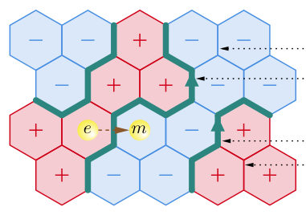
<figcaption class="paper-figure-caption"><b>Fig 1.</b> Figure 1: Input data for an SET lattice model. Plaquette domains are labeled the elements of symmetry group. The red and blue regions represent two local domain types, and the thick green links mark the domain walls between them. In the toric-code SET with EM- exchange symmetry, crossing such a wall sends an e anyon to an m anyon. The same domain labels determine the block of the input multifusion category from which each edge label is chosen: edges inside + and −domains carry objects in the diagonal blocks M++ and M−−, while oriented domain-wall edges carry objects in the off-diagonal blocks M+− and M−+.</figcaption>
</figure>
<figure class="paper-figure-card">
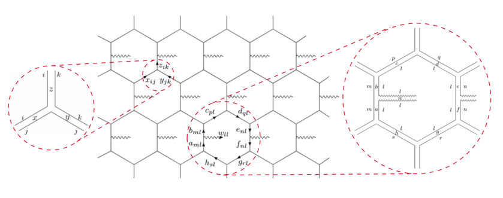
<figcaption class="paper-figure-caption"><b>Fig 2.</b> Figure 2: The fattened honeycomb lattice. Here, xij ∈Mij, yjk ∈Mjk, zik ∈Mik, etc. The fusion rule Mij ⊗Mkl ⊂δjkMil allows each vertex to be fattened, as shown in the left figure. Multifusion indices are assigned to the doubled lines, with connected doubled lines carrying the same index. Consequently, after fattening the entire lattice, each plaquette is naturally labeled by a multifusion index, as illustrated in the right figure.</figcaption>
</figure>
</div>

<p><strong>Summary.</strong> This paper develops a theory for anyon condensation in topologically ordered phases that possess global symmetries. It shows that symmetry preservation requires the underlying algebraic structure (the multifusion category) to carry a specific group grading. This framework allows researchers to predict the resulting topological phase after a symmetry-respecting quantum transition.</p>
<p><strong>Why it may be interesting.</strong> It provides a rigorous mathematical framework for understanding how symmetries constrain topological phase transitions, which is crucial for designing and classifying exotic quantum materials relevant to AMO physics.</p>
<details>
<summary>Detailed structure</summary>
<p><strong>Main problem.</strong> The paper investigates how anyon condensation occurs within Symmetry-Enriched Topological (SET) phases, addressing the complexity introduced by requiring the condensate to respect global symmetries.</p>
<p><strong>Main result.</strong> Symmetry-preserving condensation is mathematically characterized by the input multifusion category admitting a compatible group grading, which in turn constructs the input for the resulting child SET phase.</p>
<p><strong>Method.</strong> The study employs advanced mathematical techniques involving multifusion categories and their $G$-gradings to model topological order transitions.</p>
<p><strong>Model / system.</strong> The physical system is modeled by SET phases described using an enlarged Hu-Geer-Wu (HGW) string-net model, whose input data is formalized via multifusion categories.</p>
<p><strong>Key observables.</strong> The existence of a compatible group grading on the input multifusion category; the structure of the resulting child SET phase's input category.</p>
<p><strong>Important parameters / regimes.</strong> Global symmetry groups ($G$, $N$), finite group extensions ($E$), and the specific quantum-double examples ($\mathbb{Z}_2 	imes \mathbb{Z}_2$, $S_3$, $\mathbb{Z}_4$).</p>
<p><strong>Assumptions / limitations.</strong> The global symmetries are described by finite groups, and the physical description of SET phases is accurately captured by the multifusion category framework.</p>
<p><strong>Figures summary.</strong> Figure 1 illustrates the input data for an SET lattice model using a $\mathbb{Z}_2$ toric code. Figure 2 shows the 'fattened honeycomb lattice' structure related to fusion rules.</p>
<p><strong>Paper structure.</strong> The paper progresses from defining the mathematical tools (multifusion categories, $G$-grading) to analyzing the mechanism of symmetry-preserving condensation through successive condensations, culminating in concrete examples using group extensions.</p>
</details>
<details>
<summary>Abstract</summary>
<p>Although anyon condensation is a standard mechanism for relating topological orders, anyon condensation in symmetry-enriched topological (SET) phases is more intricate because the condensate must also be compatible with the global symmetry. We study symmetry-preserving anyon condensation in SET phases described by the enlarged Hu-Geer-Wu (HGW) string-net model with multifusion-category input data. We show that a $G$-preserving condensation is characterized by a compatible grading of the input multifusion category, and that this grading constructs the multifusion-category input of the child SET phase. To make this construction concrete, we consider the case where the relevant data come from a finite group extension $E$ of $G$ by $N$: an $E$-graded fusion category induces a $G$-SET input by passing to the quotient symmetry $G$, and the resulting input naturally carries a compatible $N$-grading that implements the further condensation inside the SET phase while preserving $G$. We illustrate the construction using three quantum-double examples: the trivial extension $\mathbb{Z}_2\times\mathbb{Z}_2$, the non-Abelian semidirect product $S_3$, and the nontrivial central extension $\mathbb{Z}_4$. The $\mathbb{Z}_4$ example further shows that symmetry fractionalized anyons do not obstruct symmetry-preserving condensation once the condensate is treated as a physical coherent state.</p>
</details>
<p><sub><a href="#top">↑ back to top</a></sub></p>

<p><a id="paper-2607.24728"></a></p>
<h3 id="classical-simulation-and-model-concentration-in-passive-linear-optics"><a href="http://arxiv.org/abs/2607.24728v1">Classical simulation and model concentration in passive linear optics</a></h3>
<p><strong>Authors:</strong> Léo Monbroussou, Hugo Thomas, Hela Mhiri, Zoë Holmes, Elham Kashefi<br>
<strong>Type:</strong> theory · <strong>Category:</strong> quantum information and computing · <strong>PDF:</strong> <a href="https://arxiv.org/pdf/2607.24728v1">https://arxiv.org/pdf/2607.24728v1</a><br>
<strong>Analysis basis:</strong> full PDF text, analyzed in chunks
<strong>Topic relevance:</strong> <code>entanglement &amp; information structure</code> <strong>2/5</strong> · <code>analog quantum simulation</code> <strong>1/5</strong> · <code>interference shaping light</code> <strong>1/5</strong></p>
<div class="figure-strip-hint">↔ Scroll figures horizontally</div>
<div class="paper-figures-scroll">
<figure class="paper-figure-card">
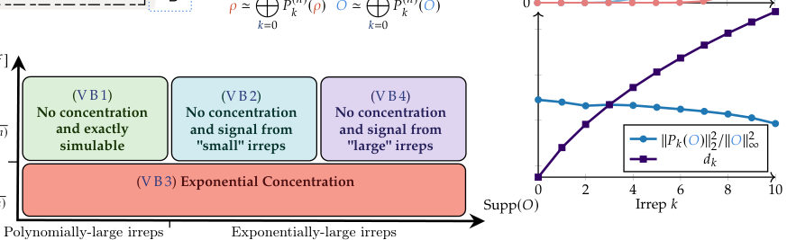
<figcaption class="paper-figure-caption"><b>Fig 1.</b> FIG. 1: Summary of the main results: we study passive linear-optical models through the lens of the decomposition of its operator into irreducible components. By adapting the iterative procedure from [1], we study the irreducible component purities of the input state 𝜌and observable 𝑂in order to study the concentration of the model. We present the example of Fock-state purities and the number-phase observable introduced in Section V A compared with the irreducible dimension, for 𝑛= 10 photons and 𝑚= 20 modes. Finally, we compare our results with simulation techniques, and we identify four regimes of interest.</figcaption>
</figure>
<figure class="paper-figure-card">
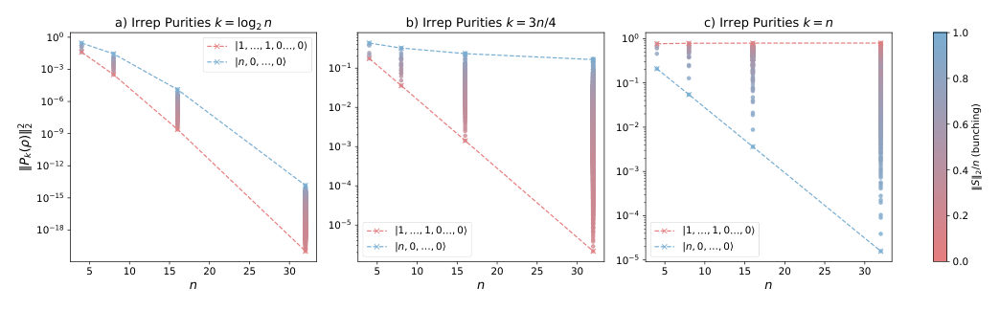
<figcaption class="paper-figure-caption"><b>Fig 2.</b> FIG. 2: Scaling of the Fock-state purities: a) Fock-states purities for the irrep 𝑘= log2 𝑛; b) Fock-states purities for the irrep 𝑘= 3𝑛/4; c) Fock-states purities for the irrep 𝑘= 𝑛. The colour-scale corresponds to the 2-norm of the occupation vector (𝑠1, · · · , 𝑠𝑚) for each Fock state.</figcaption>
</figure>
<figure class="paper-figure-card">
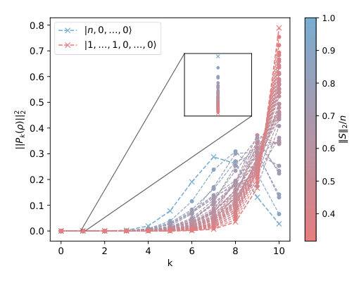
<figcaption class="paper-figure-caption"><b>Fig 3.</b> FIG. 3: Fock-State purity profile: Fock state purity dis- tribution for 𝑛= 10 particles in 𝑚= 2𝑛modes. We only consider the Fock states that are all different under any permutation of the occupation.</figcaption>
</figure>
<figure class="paper-figure-card">
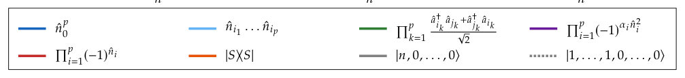
<figcaption class="paper-figure-caption"><b>Fig 4.</b> FIG. 4: Passive linear optical model concentration: Expectation value variance of the different observable of interest presented in Section V A. For the Fock-state projector case, we consider a projection over the Fock state |𝑆⟩such that occ(𝑆) = 𝑝. A comparison between the different scaling and simulation method is presented in Table I and discussed in Section V B.</figcaption>
</figure>
<figure class="paper-figure-card">
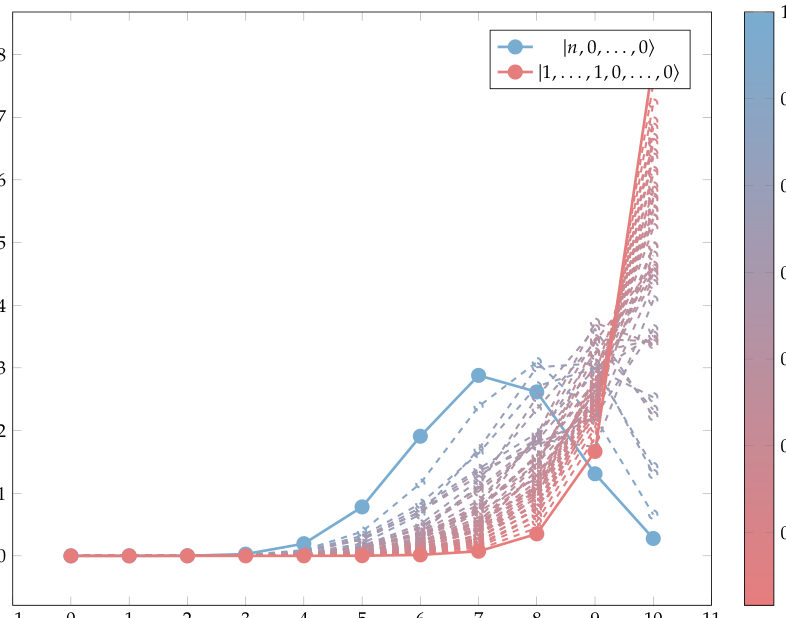
<figcaption class="paper-figure-caption"><b>Fig 5.</b> FIG. 5: Fock state purity distribution for 𝑛= 10 particles in 𝑚= 2𝑛modes. We only consider the Fock states that are all different under any permutation of the occupation.</figcaption>
</figure>
</div>

<p><strong>Summary.</strong> This work develops a representation-theoretic framework to study how expectation values behave in passive linear optics. By analyzing projections onto irreducible representations, the authors characterize when these systems exhibit exponential concentration or retain signals that are classically hard to simulate. This provides a systematic route for understanding quantum advantage in bosonic photonic circuits.</p>
<p><strong>Why it may be interesting.</strong> It provides a powerful mathematical tool (representation theory) to analyze the complexity of quantum optical circuits, directly linking physical diagnostics (concentration) to computational hardness.</p>
<details>
<summary>Detailed structure</summary>
<p><strong>Main problem.</strong> The paper characterizes the concentration of expectation values for observables in passive linear optics, aiming to establish an analogous tradeoff between quantum advantage and classical simulability for bosonic systems.</p>
<p><strong>Main result.</strong> Concentration is governed by the misalignment of projections into irreducible representations (irreps) of the unitary group. The authors identify regimes that evade exponential concentration while retaining a signal component not accessible to known efficient classical simulation methods.</p>
<p><strong>Method.</strong> The analysis employs a representation-theoretic framework, decomposing operators and states into irreps of $U(m)$ to calculate variances over random unitaries (Haar measure).</p>
<p><strong>Model / system.</strong> The system is passive linear optics, modeled by photon evolution through beam splitters and phase shifters, described by unitary transformations $U \in U(m)$ acting on fixed particle-number sectors $\mathcal{F}_n$.</p>
<p><strong>Key observables.</strong> Expectation values of particle-number-preserving observables ($\langle \hat{O} 
angle$), generalized entanglement (state purity), and generalized locality (observable purity).</p>
<p><strong>Important parameters / regimes.</strong> Photon number ($n$), number of modes ($m$), and the scaling index $k$ used for irrep decomposition.</p>
<p><strong>Assumptions / limitations.</strong> The analysis focuses on fixed total photon numbers ($n$) and utilizes theorems derived from averaging over Haar-random unitaries. The separation between hard/easy regimes is noted to be only partial.</p>
<p><strong>Figures summary.</strong> Figure 1 summarizes four regimes based on irrep decomposition (Exponential Concentration, No concentration/small irreps, etc.). Figure 2 shows the scaling of Fock-state purities for different choices of irrep indices $k$ relative to $n$.</p>
<p><strong>Paper structure.</strong> The paper develops a representation-theoretic framework by decomposing operators into irreducible representations. It then applies this to calculate variances over random unitaries, relating concentration properties to entanglement/locality measures and comparing these findings against known classical simulation techniques for specific observables.</p>
</details>
<details>
<summary>Abstract</summary>
<p>Passive linear optics is a restricted model of quantum computation, with complexity-theoretic evidence of quantum advantage for sampling tasks and low losses that make it attractive for near-term algorithms. In qubit architectures, a body of work has revealed a close connection between barren plateaus and classical simulability. Whether an analogous tradeoff exists for bosonic systems remains largely unexplored. Building on a recently developed representation-theoretic framework for moments of random passive linear-optical circuits, we characterize the concentration of expectation values for relevant families of particle-number-preserving observables by evaluating their projections into irreducible representations of the unitary group and analyzing their asymptotic scaling. We show that concentration is governed by the misalignment of the projections into irreducible representations of the input state and the observable, giving a unified representation-theoretic interpretation of generalized entanglement and locality in the bosonic setting. We further relate these concentration properties to existing classical simulation techniques, identifying broad classes of trainable observables that admit efficient classical simulation. Conversely, we identify Fock-state inputs and observables that appear to evade exponential concentration while retaining a polynomially large signal component not accessible to known efficient classical simulation methods. The separation is only partial: most of the signal remains classically tractable, and the residual part, while not exponentially suppressed, is small enough that a truncation serves as a classical surrogate with polynomially small error. Our framework nonetheless provides a systematic route for searching for regimes that unambiguously combine the absence of exponential concentration and lies beyond known efficient classical simulation methods.</p>
</details>
<p><sub><a href="#top">↑ back to top</a></sub></p>

<p><a id="paper-2607.24195"></a></p>
<h3 id="parallelizable-exact-synthesis-of-quantum-circuits-via-semi-tensor-product"><a href="http://arxiv.org/abs/2607.24195v1">Parallelizable Exact Synthesis of Quantum Circuits via Semi-Tensor Product</a></h3>
<p><strong>Authors:</strong> Chenjian Li, Dingchao Gao, Xiangzhen Zhou, Ji Guan, Pengcheng Zhu, Zhufei Chu<br>
<strong>Type:</strong> both · <strong>Category:</strong> quantum information and computing · <strong>PDF:</strong> <a href="https://arxiv.org/pdf/2607.24195v1">https://arxiv.org/pdf/2607.24195v1</a><br>
<strong>Analysis basis:</strong> full PDF text, analyzed in chunks
<strong>Topic relevance:</strong> <code>entanglement &amp; information structure</code> <strong>2/5</strong> · <code>analog quantum simulation</code> <strong>1/5</strong> · <code>methods for driven-dissipative</code> <strong>1/5</strong></p>
<div class="figure-strip-hint">↔ Scroll figures horizontally</div>
<div class="paper-figures-scroll">
<figure class="paper-figure-card">
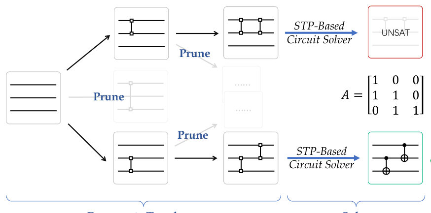
<figcaption class="paper-figure-caption"><b>Fig 1.</b> Fig. 1. Overall structure of our STP-based synthesis algorithm for a fixed gate count (#g). Given a synthesis target, candidate topologies are enumerated, while infeasible ones are eliminated through pruning. Each surviving topology is then passed to an STP-based circuit solver, which either proves it unsatisfiable or returns a complete circuit implementation. Both topology enumeration and circuit solving can be processed in parallel, since different topologies can be handled independently.</figcaption>
</figure>
<figure class="paper-figure-card">
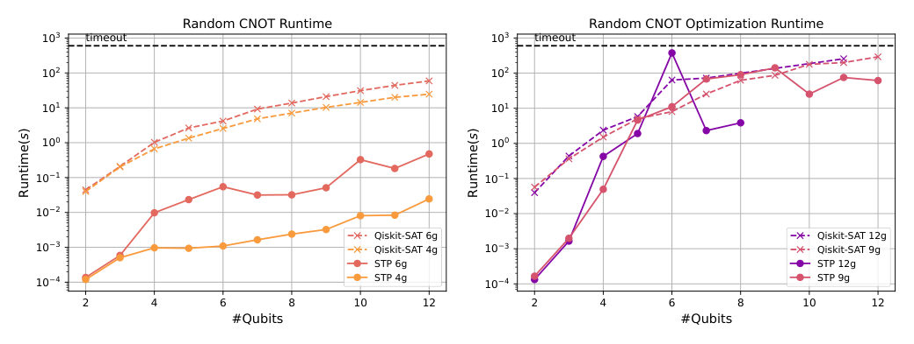
<figcaption class="paper-figure-caption"><b>Fig 2.</b> Fig. 2. Runtime of STP against Qiskit-SAT on random CNOT circuits. For each data point, 10 random circuits are generated and tested. The timeout value is set to 600 seconds.</figcaption>
</figure>
<figure class="paper-figure-card">
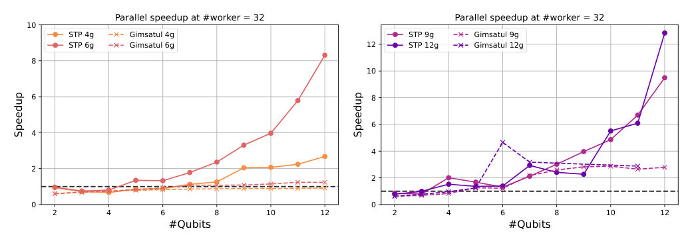
<figcaption class="paper-figure-caption"><b>Fig 3.</b> Fig. 3. Parallel speedup of STP against Qiskit-SAT with the Gimsatul backend [29] with 32 workers on random CNOT circuits. For each data point, 10 random circuits are generated and tested.</figcaption>
</figure>
<figure class="paper-figure-card">
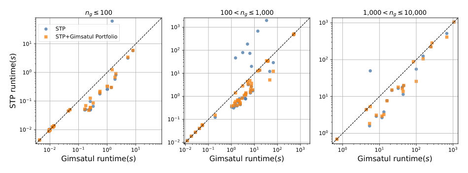
<figcaption class="paper-figure-caption"><b>Fig 4.</b> Fig. 4. Optimization runtime of Gimsatul, STP and STP+Gimsatul portfolio on QASMBench. Left: QASMBench cases with gate count smaller than 100; Middle: Cases with gate count greater than 100 but smaller than 1000; Right: Cases with gate count greater than 1,000 but smaller than 10,000.</figcaption>
</figure>
<figure class="paper-figure-card">
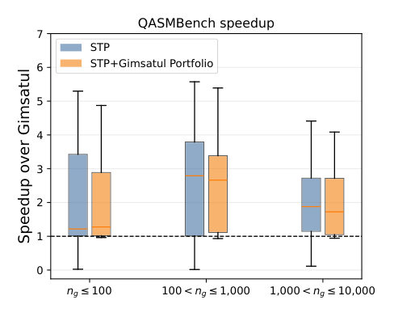
<figcaption class="paper-figure-caption"><b>Fig 5.</b> Fig. 5. Speedup of STP-based kernels over Gimsatul on different categories of QASMBench</figcaption>
</figure>
</div>

<p><strong>Summary.</strong> This work presents a novel, parallel exact synthesis framework for optimizing quantum circuits using the Semi-Tensor Product (STP) theory. By efficiently solving circuit constraints derived from CNOT and phase polynomial gates, it significantly outperforms existing SAT-based methods on benchmark tests. This advancement provides a powerful kernel for improving overall quantum compilation workflows.</p>
<p><strong>Why it may be interesting.</strong> While focused on quantum computation optimization rather than AMO dynamics, the underlying mathematical tools (tensor products, algebraic structure analysis) are highly relevant to characterizing entanglement structures or simulating complex multi-body interactions in open quantum systems.</p>
<details>
<summary>Detailed structure</summary>
<p><strong>Main problem.</strong> The paper addresses the challenge of exact synthesis for quantum circuits, which is crucial for optimizing small circuit shards in quantum compilation.</p>
<p><strong>Main result.</strong> The proposed Semi-Tensor Product (STP) framework achieves significant parallel speedups (up to 12.8x on random circuits) compared to SAT-based methods when synthesizing CNOT and phase polynomial circuits.</p>
<p><strong>Method.</strong> It introduces a parallel exact synthesis framework based on STP theory, decomposing the problem into topology enumeration and solving missing gate directions via canonical STP factorization procedures.</p>
<p><strong>Model / system.</strong> The system is quantum computation using qubits, where circuit semantics are modeled by linear parity matrices (for CNOT) or phase polynomials ($Rz$ gates).</p>
<p><strong>Key observables.</strong> Computational speedup factor, synthesis feasibility, and the number of required gates/circuit size.</p>
<p><strong>Important parameters / regimes.</strong> The complexity is NP-hard; performance is measured against SAT-based baselines on benchmarks like QASMBench.</p>
<p><strong>Assumptions / limitations.</strong> Existing methods suffer from encoding overhead (SAT) or memory bottlenecks; the STP approach assumes that circuit constraints can be mapped to solvable canonical STP formulas.</p>
<p><strong>Figures summary.</strong> Figures compare parallel speedups of STP against SAT/Gimsatul on random circuits and show end-to-end runtime comparisons across different gate count regimes of QASMBench.</p>
<p><strong>Paper structure.</strong> The paper details the need for exact synthesis, introduces the STP theory as a solution, presents the framework involving topology enumeration and factorization, and validates its performance against state-of-the-art methods on established benchmarks.</p>
</details>
<details>
<summary>Abstract</summary>
<p>Exact synthesis is a useful tool in quantum compilation by providing optimal alternative implementations of small circuit shards and is widely used as a circuit re-synthesis optimization kernel. However, existing exact synthesis methods suffer from encoding overhead, poor parallel scalability, and memory bottlenecks. This paper introduces a parallel exact synthesis framework for CNOT and phase polynomial circuits, which is based on the semi-tensor product (STP) theory of matrices. By enumerating undirected partial-gate topologies and solving the missing gate directions separately, we are able to parallelize both stages and achieve a parallel speedup of up to $12.8\times$ with 32 workers on this NP-hard problem. More specifically, for each topology, the circuit semantics are converted into canonical STP formulas, and feasibility is decided by a right-to-left factorization procedure that removes infeasible direction assignments. On randomly generated synthesis targets, STP is typically $100\times-1000\times$ faster than the SAT-based baseline on small instances, and remains competitive for more difficult instances. When integrated in a real-world circuit optimization workflow, our algorithm outperforms the SAT-based approach on 89% of cases in QASMBench, and achieves a median speedup of $1.91\times$.</p>
</details>
<p><sub><a href="#top">↑ back to top</a></sub></p>

<p><a id="paper-2607.23407"></a></p>
<h3 id="performance-analysis-of-qaoa-across-distributed-quantum-network-topologies-using-switchqnet"><a href="http://arxiv.org/abs/2607.23407v1">Performance Analysis of QAOA Across Distributed Quantum Network Topologies Using SwitchQNet</a></h3>
<p><strong>Authors:</strong> Samanvay Sharma, Siyuan Niu, Amin Taherkhani, Michal Hajdusek, Rodney Van Meter<br>
<strong>Type:</strong> theory · <strong>Category:</strong> quantum information and computing · <strong>PDF:</strong> <a href="https://arxiv.org/pdf/2607.23407v1">https://arxiv.org/pdf/2607.23407v1</a><br>
<strong>Analysis basis:</strong> full PDF text, analyzed in chunks
<strong>Topic relevance:</strong> <code>QC/QI experiment</code> <strong>2/5</strong> · <code>methods for driven-dissipative</code> <strong>1/5</strong> · <code>non-equilibrium dynamics</code> <strong>1/5</strong></p>
<div class="figure-strip-hint">↔ Scroll figures horizontally</div>
<div class="paper-figures-scroll">
<figure class="paper-figure-card">
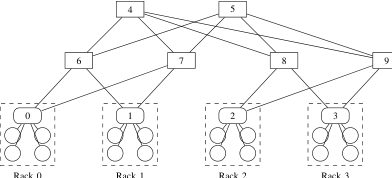
<figcaption class="paper-figure-caption"><b>Fig 1.</b> Fig. 1: Clos topology for n = 4 generated from gen_clos_conn function. Each rack contains one ToR switch and four QPUs.</figcaption>
</figure>
<figure class="paper-figure-card">
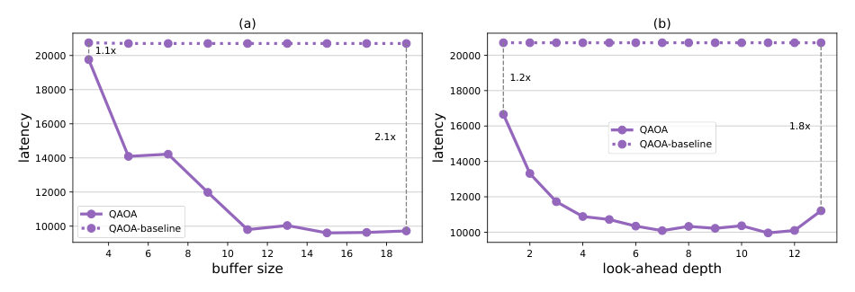
<figcaption class="paper-figure-caption"><b>Fig 2.</b> Fig. 2: QAOA performance improvement of SwitchQNet varying with (a) buffer-size and (b) look-ahead depth</figcaption>
</figure>
<figure class="paper-figure-card">
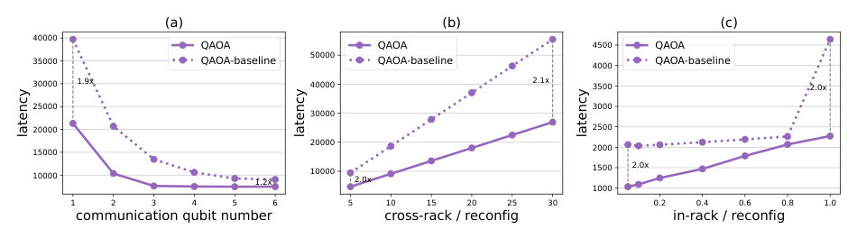
<figcaption class="paper-figure-caption"><b>Fig 3.</b> Fig. 3: QAOA sensitivity varying with (a) communication qubits per QPU, (b) cross-rack EPR latency normalized by reconfiguration latency, and (c) in-rack EPR latency normalized by reconfiguration latency.</figcaption>
</figure>
</div>

<p><strong>Summary.</strong> This work evaluates the Quantum Approximate Optimization Algorithm (QAOA) as a benchmark workload for distributed quantum computing architectures simulated via SwitchQNet. By mapping QAOA's graph interactions onto network communication requests, the authors measure performance metrics like latency across various topologies. The results confirm that while QAOA shows measurable improvements, its performance is highly sensitive to cross-rack entanglement generation overhead.</p>
<p><strong>Why it may be interesting.</strong> While focused on quantum networking rather than AMO physics directly, understanding resource constraints (like entanglement generation latency) in large-scale quantum processors is crucial for realizing complex quantum simulation algorithms that might utilize trapped ions or superconducting circuits.</p>
<details>
<summary>Detailed structure</summary>
<p><strong>Main problem.</strong> The paper analyzes how the performance of QAOA, a structured quantum algorithm, scales when executed across complex distributed quantum computing (DQC) network architectures.</p>
<p><strong>Main result.</strong> QAOA provides modest but consistent latency reductions compared to baseline compilers, confirming its value as a diagnostic benchmark for understanding the interplay between algorithm structure and network limitations.</p>
<p><strong>Method.</strong> The authors adapted QAOA by adding a routing generator that translates graph-based cost interactions into remote communication requests processed by the SwitchQNet compiler framework.</p>
<p><strong>Model / system.</strong> The system is a Quantum Data-Center (QDC) architecture interconnecting multiple QPUs via reconfigurable optical switch networks, evaluated across topologies like Clos, fat-tree, and spine-leaf.</p>
<p><strong>Key observables.</strong> Communication latency, EPR-pair overhead, EPR wait time, retry overhead, and sensitivity to buffer size/look-ahead depth.</p>
<p><strong>Important parameters / regimes.</strong> Target graph degree ($k=3$), look-ahead depth (10), in-rack vs. cross-rack latencies (0.1 ms vs 10 ms).</p>
<p><strong>Assumptions / limitations.</strong> Intra-QPU computation time is neglected; the analysis focuses on one QAOA layer ($p=1$) at the routing level.</p>
<p><strong>Figures summary.</strong> Figures illustrate performance improvements varying with buffer size and look-ahead depth, while tables summarize latency and wait time gains across different architectural settings (e.g., QPU count vs. baseline).</p>
<p><strong>Paper structure.</strong> The paper establishes QAOA as a structured workload benchmark, details the adaptation of QAOA to SwitchQNet via a routing generator, evaluates performance metrics across various topologies, and concludes by quantifying the algorithmic benefit relative to network overheads.</p>
</details>
<details>
<summary>Abstract</summary>
<p>Quantum data-center (QDC) architectures aim to scale distributed quantum computing (DQC) by interconnecting multiple quantum processing units (QPUs), but their performance depends strongly on how algorithmic communication patterns interact with entanglement generation, switch reconfiguration, and network topology. This paper studies the Quantum Approximate Optimization Algorithm (QAOA) as a graph-structured optimization workload for QDC-based distributed quantum computing. We adapt QAOA to SwitchQNet, a distributed quantum compiler framework that schedules communication and entanglement generation over switch-based QDC networks, by adding a routing generator that converts graph-dependent two-qubit cost interactions into remote-CX communication requests across QPUs. Using this extension, we evaluate QAOA instances across Clos, fat-tree, and spine-leaf topologies, measuring communication latency, EPR-pair overhead, EPR wait time, retry overhead, and sensitivity to buffer size, look-ahead depth, communication-qubit count, EPR latency, and EPR fidelity assumptions. The results show that QAOA obtains modest but consistent latency reductions, highlighting its value as a diagnostic benchmark for studying the interaction between algorithm structure, entanglement management, and quantum-network architecture.</p>
</details>
<p><sub><a href="#top">↑ back to top</a></sub></p>

<p><a id="paper-2607.24118"></a></p>
<h3 id="quantum-key-distribution-over-a-2-km-free-space-channel-with-a-high-secure-key-rate"><a href="http://arxiv.org/abs/2607.24118v1">Quantum key distribution over a 2 km free-space channel with a high secure key rate</a></h3>
<p><strong>Authors:</strong> Kyungdeuk Park, Dongkyu Kim, Dong-Gil Im, Yonggi Jo, Jisu Kim, Jonguk Choi, Yong Sup Ihn<br>
<strong>Type:</strong> experiment · <strong>Category:</strong> quantum information and computing · <strong>PDF:</strong> <a href="https://arxiv.org/pdf/2607.24118v1">https://arxiv.org/pdf/2607.24118v1</a><br>
<strong>Analysis basis:</strong> full PDF text, analyzed in chunks
<strong>Topic relevance:</strong> <code>quantum optics experiment</code> <strong>2/5</strong> · <code>QC/QI experiment</code> <strong>1/5</strong> · <code>quantum measurements</code> <strong>1/5</strong></p>
<div class="figure-strip-hint">↔ Scroll figures horizontally</div>
<div class="paper-figures-scroll">
<figure class="paper-figure-card">
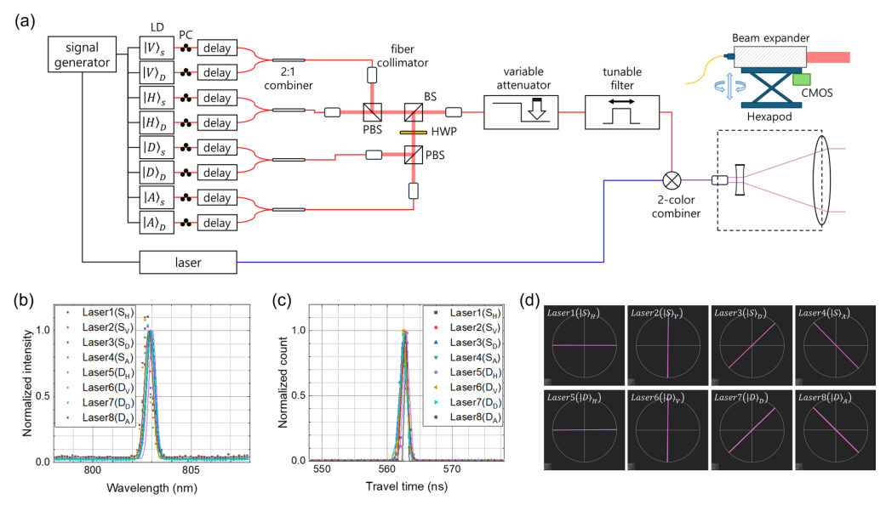
<figcaption class="paper-figure-caption"><b>Fig 1.</b> FIG. 1. (a) Schematic diagram of the free-space decoy-state BB84 QKD transmitter setup. (b) Measured optical spectra of the eight independent pulsed lasers after passing through the narrow-band tunable filter. (c) Temporal pulse profiles of the eight channels, demonstrating tight sub-nanosecond synchronization. (d) Polarization state measurements of each channel verifying the H, V , D, and A states for both signal and decoy pulses. LD: laser diode, PC: polarization controller, PBS: polarization beam splitter, BS: beam splitter, HWP: half waveplate.</figcaption>
</figure>
<figure class="paper-figure-card">
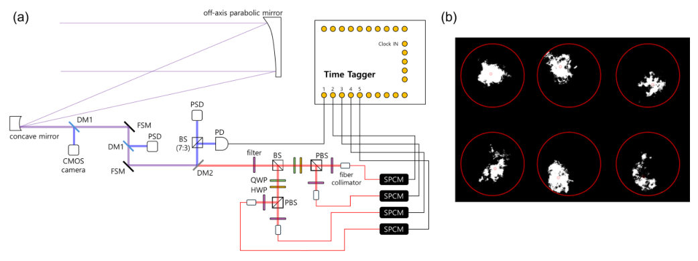
<figcaption class="paper-figure-caption"><b>Fig 2.</b> FIG. 2. (a) Optical layout of the free-space QKD receiver and active tracking system. (b) Raw intensity profiles of the 660 nm guide laser captured by the receiver CMOS camera at different time intervals. DM: dichroic mirror, FSM: fast-steering mirror, PD: photo-detector, PSD: position sensitive detector, BS: beam splitter, PBS: polarization beam splitter, QWP: quarter waveplate, HWP: half waveplate, SPCM: single photon counting module.</figcaption>
</figure>
<figure class="paper-figure-card">
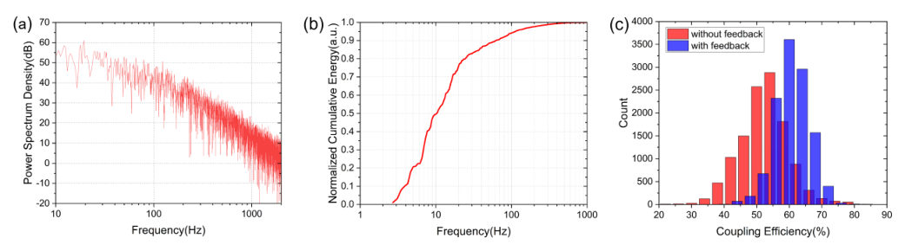
<figcaption class="paper-figure-caption"><b>Fig 3.</b> FIG. 3. Characterization of atmosperic turbulence and stabilization performance. (a) Power spectral density of the beam- wander measured by the position-sensitive detector (PSD1) at the receiver. (b) Normalized cumulative energy of the beam- wander as a function of frequency, showing that 90% of the turbulence energy is concentrated below 60 Hz. (c) Histogram of the single-photon coupling efficiency into the MMF measured over a 1-minute interval, comparing the performance with (blue) and without (red) the active FSM-PSD feedback loop.</figcaption>
</figure>
<figure class="paper-figure-card">
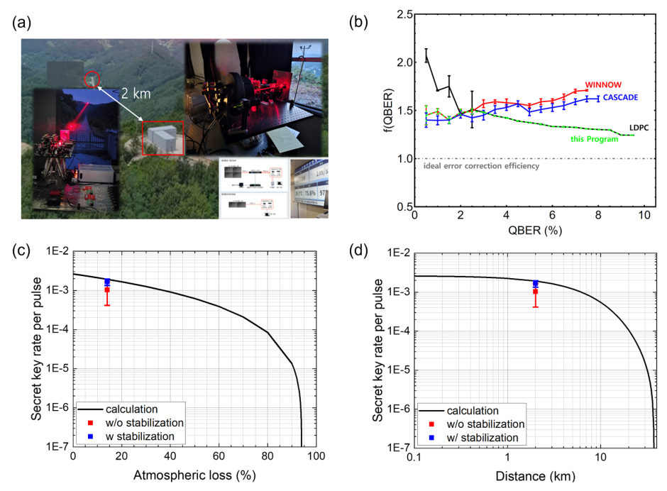
<figcaption class="paper-figure-caption"><b>Fig 4.</b> FIG. 4. Outdoor QKD experimental results and performance analysis. (a) Photographic overview of the 2 km free-space QKD link established at the Agency for Defense Development. (b) Error correction efficiency f(QBER) as a function of the quantum bit error rate (QBER), comparing the experimental performance of the Winnow and LDPC protocols against the ideal error correction limit. (c) Secret key rate per pulse as a function of atmospheric loss, comparing experimental data point (with and without stabilization) with the theoretical simulation. (d) Secret key rate per pulse as a function of channel distance, showing the projected performance up to 30 km under clear-air conditions.</figcaption>
</figure>
</div>

<p><strong>Summary.</strong> The authors experimentally demonstrated a high-rate Quantum Key Distribution (QKD) system operating over a 2 km outdoor link. They overcame significant hurdles from atmospheric turbulence and beam wander by integrating an active stabilization system using FSMs and PSDs. This work provides a practical framework, achieving a secure key rate of 164.8 kbps, essential for future mobile quantum networks.</p>
<p><strong>Why it may be interesting.</strong> This work directly addresses the engineering challenges of deploying quantum communication outside controlled laboratory settings, which is crucial for realizing global quantum networks that rely on free-space links.</p>
<details>
<summary>Detailed structure</summary>
<p><strong>Main problem.</strong> The primary challenge addressed is demonstrating high-rate, long-distance Quantum Key Distribution (QKD) over free-space channels affected by atmospheric turbulence and structural drift.</p>
<p><strong>Main result.</strong> The system successfully achieved a secure key rate of 164.8 kbps over a 2 km outdoor channel, proving the viability of high-speed quantum communication in realistic environments.</p>
<p><strong>Method.</strong> The methodology involves implementing an active beam stabilization system using Fast-Steering Mirrors (FSMs) and Position Sensitive Detectors (PSDs) to counteract atmospheric turbulence and structural misalignment during BB84 QKD transmission.</p>
<p><strong>Model / system.</strong> The physical platform is a free-space decoy-state BB84 QKD link operating outdoors over 2 km, utilizing a 100 MHz multi-channel transmitter source. The receiver incorporates active tracking optics (FSMs/PSDs) coupled with coarse alignment via a hexapod platform.</p>
<p><strong>Key observables.</strong> Secure key rate (164.8 kbps), Quantum Bit Error Rate (QBER $\approx 3.3\%$), and the standard deviation of the secure key rate.</p>
<p><strong>Important parameters / regimes.</strong> 2 km channel distance, 100 MHz repetition rate, $7.5 \mu	ext{rad}$ pointing resolution requirement, and a closed-loop control bandwidth $>500$ Hz.</p>
<p><strong>Assumptions / limitations.</strong> The performance scaling up to 30 km is simulated assuming clear atmospheric conditions; the use of weak coherent pulses necessitates the decoy-state protocol.</p>
<p><strong>Figures summary.</strong> Figures illustrate schematic setups, measured spectra, temporal pulse profiles, and critically, show the comparison of coupling efficiency with and without active FSM-PSD feedback loops.</p>
<p><strong>Paper structure.</strong> The paper details the experimental setup (transmitter/receiver), describes the necessity and implementation of multi-stage active beam stabilization (coarse alignment followed by high-speed tracking), presents performance metrics comparing stabilized vs. unstabilized operation, and concludes with scalability projections.</p>
</details>
<details>
<summary>Abstract</summary>
<p>Free-space quantum key distribution (QKD) provides crucial advantages, including mobility and deployment flexibility, for securing next-generation communication networks. However, practical free-space implementations face major challenges, such as muilti-photon vulnerabilities, spatial mode mismatch, and atmospheric turbulence-induced beam fluctuations. In this work, we experimentally demonstrate a free-space decoy-state BB84 QKD system operating at a 100 MHz repetition rate with a 2.5 ns pulse width over a 2 km outdoor channel. By employing an active beam-wander correction based on fast-steering mirrors (FSMs) and position sensitive detectors (PSDs) con?figuration, our system achieves a secure key rate of 164.8 kbps under a quantum bit error rate (QBER) of approximately 3.3 %. This demonstration provides a practical framework for deploying high-rate, long-distance free-space quantum communication in realistic turbulence environments.</p>
</details>
<p><sub><a href="#top">↑ back to top</a></sub></p>

<p><a id="paper-2607.24682"></a></p>
<h3 id="cp-preserving-channels"><a href="http://arxiv.org/abs/2607.24682v1">CP-preserving channels</a></h3>
<p><strong>Authors:</strong> Indu Bala, Sourav Das, Swapan Rana<br>
<strong>Type:</strong> theory · <strong>Category:</strong> quantum information and computing · <strong>PDF:</strong> <a href="https://arxiv.org/pdf/2607.24682v1">https://arxiv.org/pdf/2607.24682v1</a><br>
<strong>Analysis basis:</strong> full PDF text, analyzed in chunks
<strong>Topic relevance:</strong> <code>entanglement &amp; information structure</code> <strong>2/5</strong> · <code>correlated / nonlocal dissipation</code> <strong>1/5</strong></p>
<div class="figure-strip-hint">↔ Scroll figures horizontally</div>
<div class="paper-figures-scroll">
<figure class="paper-figure-card">
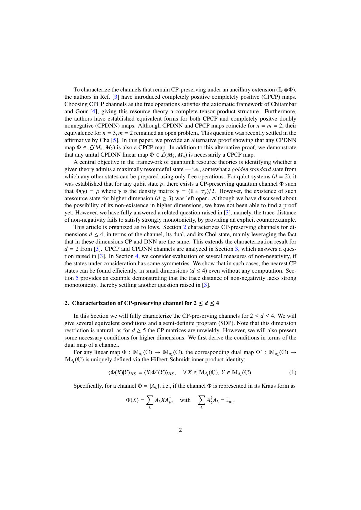
<figcaption class="paper-figure-caption"><b>Fig 1.</b> Low-resolution page preview, page 2</figcaption>
</figure>
<figure class="paper-figure-card">
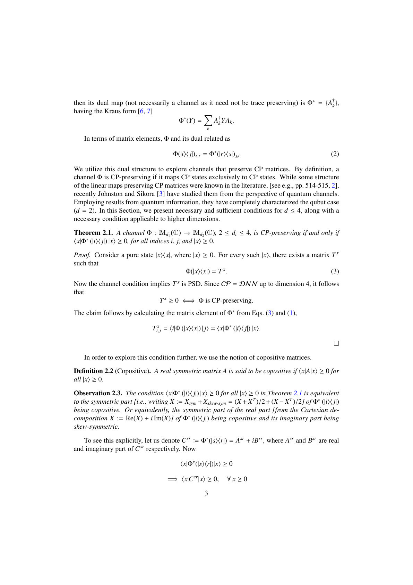
<figcaption class="paper-figure-caption"><b>Fig 2.</b> Low-resolution page preview, page 3</figcaption>
</figure>
<figure class="paper-figure-card">
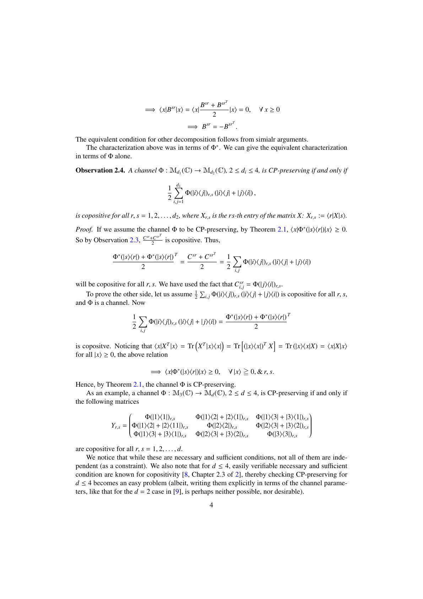
<figcaption class="paper-figure-caption"><b>Fig 3.</b> Low-resolution page preview, page 4</figcaption>
</figure>
<figure class="paper-figure-card">
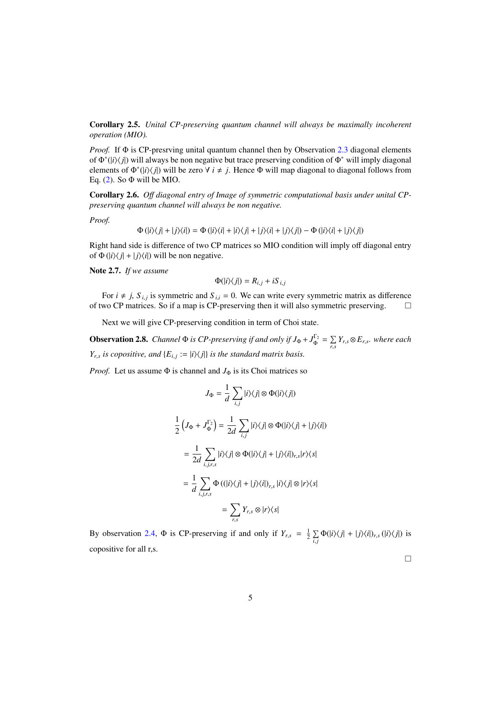
<figcaption class="paper-figure-caption"><b>Fig 4.</b> Low-resolution page preview, page 5</figcaption>
</figure>
<figure class="paper-figure-card">
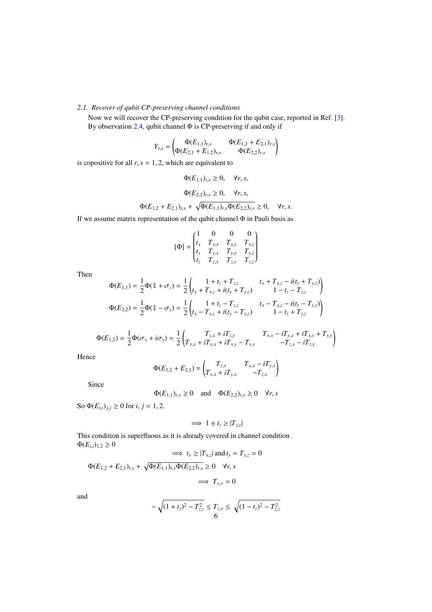
<figcaption class="paper-figure-caption"><b>Fig 5.</b> Low-resolution page preview, page 6</figcaption>
</figure>
</div>

<p><strong>Summary.</strong> This paper characterizes CP-preserving quantum channels, providing necessary and sufficient conditions for small dimensions using algebraic tools like copositivity. Crucially, it demonstrates that a common measure of non-negativity, the trace distance ($ ext{NT}$), fails to be strongly monotone under these free operations by constructing an explicit counterexample.</p>
<p><strong>Why it may be interesting.</strong> This work is highly relevant as it rigorously defines the boundaries of 'free' operations in quantum information theory by characterizing when physical channels preserve certain structural properties (like CP states), which guides resource quantification.</p>
<details>
<summary>Detailed structure</summary>
<p><strong>Main problem.</strong> The paper aims to characterize CP-preserving quantum channels ($\Phi$) within the framework of quantum resource theories, specifically addressing necessary and sufficient conditions for these maps.</p>
<p><strong>Main result.</strong> It provides explicit characterizations for small dimensions ($d \le 4$), demonstrates that the trace-distance measure of non-negativity fails strong monotonicity via a counterexample, and establishes equivalences between different types of quantum channels (e.g., CPDNN $\iff$ CPCP).</p>
<p><strong>Method.</strong> The analysis relies on using the dual map ($\Phi^*$) and properties of copositive matrices to derive necessary and sufficient conditions for channel preservation. It also involves constructing explicit counterexamples to test resource monotonicity.</p>
<p><strong>Model / system.</strong> The study concerns general quantum channels $\Phi: M_{d_1}(\mathbb{C}) 	o M_{d_2}(\mathbb{C})$ acting on density matrices, focusing particularly on the qubit case ($d=2$) and small higher dimensions up to $d=4$.</p>
<p><strong>Key observables.</strong> CP-preserving condition ($\langle x|\Phi^*(|i
angle\langle j|) |x
angle \ge 0$), copositivity of matrix combinations, Robustness ($ ext{NR}$), and Trace Distance ($ ext{NT}$) measures of non-negativity.</p>
<p><strong>Important parameters / regimes.</strong> The dimension $d$ (especially $d=2, 3, 4$) and the mixing parameter $p$ used in constructing counterexamples are critical parameters.</p>
<p><strong>Assumptions / limitations.</strong> The analysis provides necessary and sufficient conditions only for small dimensions ($d \le 4$), and the failure of strong monotonicity is demonstrated using specific mixed states $
ho = p|\Psi_2
angle\langle\Psi_2| \oplus (1-p)|\Psi_3
angle\langle\Psi_3|$.</p>
<p><strong>Figures summary.</strong> Not specified in notes, but the analysis involves tables summarizing non-negativity values for specific dimensions.</p>
<p><strong>Paper structure.</strong> The paper proceeds by establishing necessary and sufficient conditions for CP-preserving channels using copositivity (for small $d$), then investigates resource measures like $  ext{NT}$, culminating in a detailed construction of a counterexample to disprove strong monotonicity under free operations.</p>
</details>
<details>
<summary>Abstract</summary>
<p>Completely positive (CP) matrices are ubiquitous in modern science and technology with applications in optimization, graph theory, and quantum entanglement. Recently, Johnston \emph{et al.} [Linear Algebra and its Applications, 2022] have cast CP matrices into the framework of quantum resource theories, where CP states serve as free states and CP-preserving channels act as free operations. This work addresses several questions raised in their work. Specifically, we provide the necessary and sufficient conditions of CP-preserving channels in small dimensions, which are necessary in higher dimensions, and discuss the resource quantification via the trace distance of non-negativity. By constructing an explicit counterexample, we demonstrate that the trace-distance measure of non-negativity violates strong monotonicity. We also provide an alternative proof that every CPDNN channel $Φ:\MM_n\to \MM_2$ is CPCP. Additionally, we show that any unital CPDNN map $Φ:\MM_2\to \MM_n$ is also CPCP.</p>
</details>
<p><sub><a href="#top">↑ back to top</a></sub></p>

<p><a id="paper-2607.24399"></a></p>
<h3 id="multivariate-time-series-forecasting-with-adaptive-non-local-observables"><a href="http://arxiv.org/abs/2607.24399v1">Multivariate Time Series Forecasting with Adaptive Non-Local Observables</a></h3>
<p><strong>Authors:</strong> Yu-Ting Lee, Huan-Hsin Tseng, Samuel Yen-Chi Chen<br>
<strong>Type:</strong> both · <strong>Category:</strong> quantum information and computing · <strong>PDF:</strong> <a href="https://arxiv.org/pdf/2607.24399v1">https://arxiv.org/pdf/2607.24399v1</a><br>
<strong>Analysis basis:</strong> full PDF text, analyzed in chunks
<strong>Topic relevance:</strong> <code>quantum measurements</code> <strong>2/5</strong> · <code>measurement-induced transitions</code> <strong>1/5</strong></p>
<div class="figure-strip-hint">↔ Scroll figures horizontally</div>
<div class="paper-figures-scroll">
<figure class="paper-figure-card">
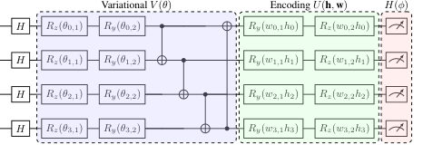
<figcaption class="paper-figure-caption"><b>Fig 1.</b> Fig. 1: VQC architecture of MTSF-ANO. Each layer con- sists a variational circuit of parameterized Rz, Ry rotations, cir- cular CNOT gates, and a data re-uploading encoding U(h, w) with trainable input scaling w. For measurement, trainable k-local observables H(ϕ) are employed.</figcaption>
</figure>
<figure class="paper-figure-card">
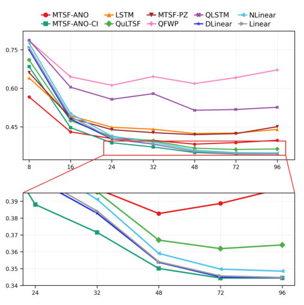
<figcaption class="paper-figure-caption"><b>Fig 2.</b> Fig. 2: Impact of lookback window size (ETTh1). We report MSE with H = 48 and varying lookback from L = 8 to L = 96. MTSF-ANO and its channel-independent variant, MTSF-ANO-CI, outperform all other models, with MTSF- ANO best at L ∈{8, 16} and MTSF-ANO-CI best for L &gt; 16.</figcaption>
</figure>
</div>

<p><strong>Summary.</strong> This paper introduces MTSF-ANO, a novel hybrid model that integrates variational quantum circuits with Adaptive Non-Local Observables (ANO) for Multivariate Time Series Forecasting. By replacing fixed local measurements with trainable non-local observables, the model significantly enhances its ability to capture complex correlations in time-series data. The results confirm ANO's potential as a powerful tool for advancing quantum machine learning applications.</p>
<p><strong>Why it may be interesting.</strong> The work directly applies advanced concepts from quantum information—specifically the use of non-local observables in measurement—to solve a complex data science problem. This demonstrates a practical pathway for leveraging quantum computational power beyond simple feature mapping, which is highly relevant to theoretical studies of quantum circuit expressivity.</p>
<details>
<summary>Detailed structure</summary>
<p><strong>Main problem.</strong> The paper addresses Multivariate Time Series Forecasting (MTSF), a task requiring models to capture complex, high-dimensional temporal correlations.</p>
<p><strong>Main result.</strong> The proposed model, MTSF-ANO, significantly outperforms strong baselines on multiple benchmark datasets by effectively utilizing adaptive non-local observables within its quantum circuit structure.</p>
<p><strong>Method.</strong> It proposes a hybrid architecture combining variational quantum circuits (VQCs) with Adaptive Non-Local Observables (ANO), which allows the measurement process to couple features across distant qubits.</p>
<p><strong>Model / system.</strong> The core model is MTSF-ANO, built upon VQCs that encode data via unitaries and are measured using trainable $k$-local Hermitian observables $H(\phi)$. This framework extends standard QNNs by moving beyond fixed local measurements to capture broader correlations.</p>
<p><strong>Key observables.</strong> Mean Squared Error (MSE) and Mean Absolute Error (MAE) used for performance benchmarking; the key observable is the expectation value derived from the ANO measurement, $\langle H(\phi) 
angle$.</p>
<p><strong>Important parameters / regimes.</strong> Non-locality parameter $k$ (where performance peaks between 3 and 5); Lookback window size $L$; Circuit depth/number of layers.</p>
<p><strong>Assumptions / limitations.</strong> The primary limitation addressed is the restricted expressivity of standard VQCs relying only on fixed local measurements. The model assumes that incorporating trainable non-local observables can capture necessary high-dimensional correlations.</p>
<p><strong>Figures summary.</strong> Figure 1 details the MTSF-ANO VQC architecture using $k$-local observables. Figure 2 illustrates how performance changes with lookback window size ($L$). Tables compare MSE improvements over baselines based on ANO's non-locality ($k$) and circuit depth.</p>
<p><strong>Paper structure.</strong> The paper introduces the MTSF problem, proposes the MTSF-ANO hybrid model incorporating ANO for enhanced measurement. It details the architecture, presents extensive empirical results across multiple ETT datasets varying $L$ and $k$, analyzes ablation studies on circuit components (depth, CNOTs), and concludes that ANO is a powerful tool for quantum time series forecasting.</p>
</details>
<details>
<summary>Abstract</summary>
<p>Multivariate time series forecasting (MTSF) predicts future values of multiple variables from historical data. While quantum neural networks have been increasingly applied to this task, they typically rely on fixed local measurements, which restrict their expressivity. We propose MTSF-ANO, a simple hybrid model for MTSF that integrates variational quantum circuits with adaptive non-local observables (ANO). On the four ETT datasets, MTSF-ANO ranks first or second in MSE in 17 of 20 settings, improving over the strongest baseline by up to 20% on ETTh1, and outperforms or matches its fixed local observable counterpart across all settings. Our ablations show how the quantum circuit design and ANO non-locality affect performance. These results suggest that ANO is a promising direction for quantum time series forecasting.</p>
</details>
<p><sub><a href="#top">↑ back to top</a></sub></p>

<p><a id="paper-2607.24712"></a></p>
<h3 id="sample-complexity-of-quantum-resource-testing-via-one-shot-quantum-blurring"><a href="http://arxiv.org/abs/2607.24712v1">Sample complexity of quantum resource testing via one-shot quantum blurring</a></h3>
<p><strong>Authors:</strong> Dmitry Grinko, Ludovico Lami<br>
<strong>Type:</strong> theory · <strong>Category:</strong> quantum information and computing · <strong>PDF:</strong> <a href="https://arxiv.org/pdf/2607.24712v1">https://arxiv.org/pdf/2607.24712v1</a><br>
<strong>Analysis basis:</strong> full PDF text, analyzed in chunks
<strong>Topic relevance:</strong> <code>entanglement &amp; information structure</code> <strong>2/5</strong> · <code>quantum measurements</code> <strong>1/5</strong></p>
<div class="figure-strip-hint">↔ Scroll figures horizontally</div>
<div class="paper-figures-scroll">
<figure class="paper-figure-card">
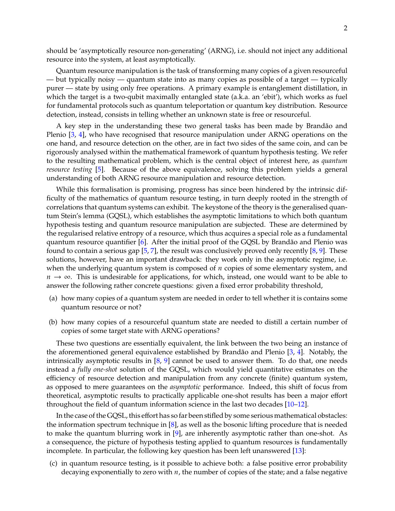
<figcaption class="paper-figure-caption"><b>Fig 1.</b> Low-resolution page preview, page 2</figcaption>
</figure>
<figure class="paper-figure-card">
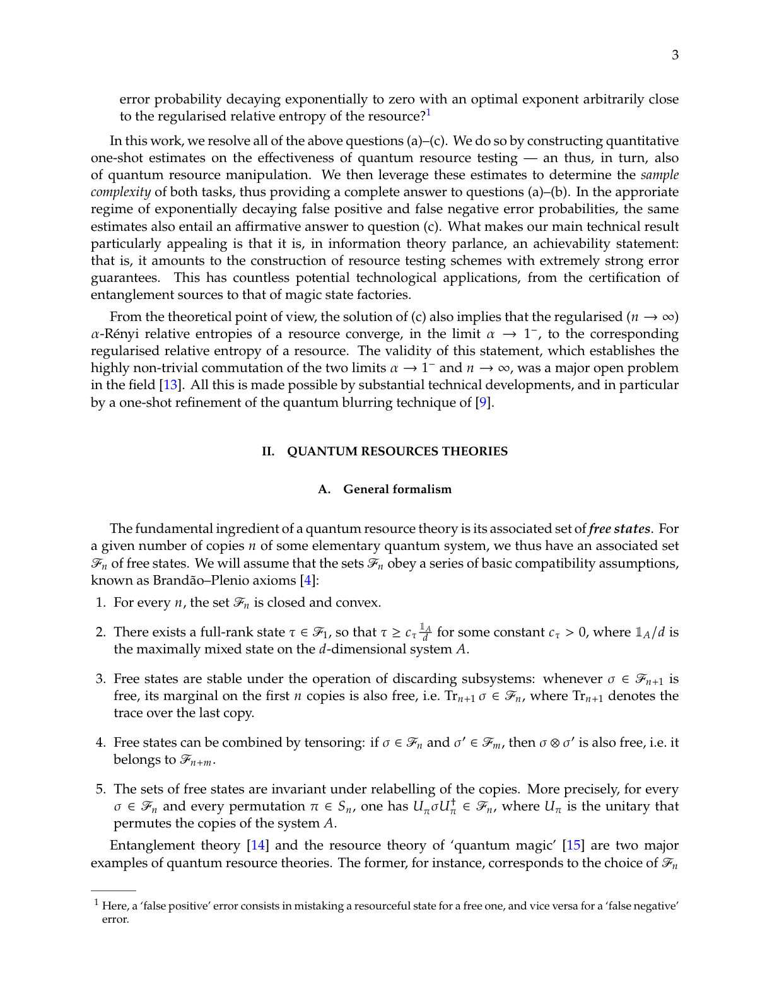
<figcaption class="paper-figure-caption"><b>Fig 2.</b> Low-resolution page preview, page 3</figcaption>
</figure>
<figure class="paper-figure-card">
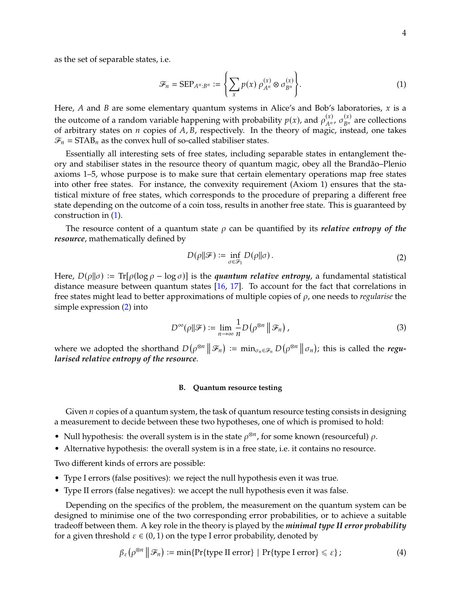
<figcaption class="paper-figure-caption"><b>Fig 3.</b> Low-resolution page preview, page 4</figcaption>
</figure>
<figure class="paper-figure-card">
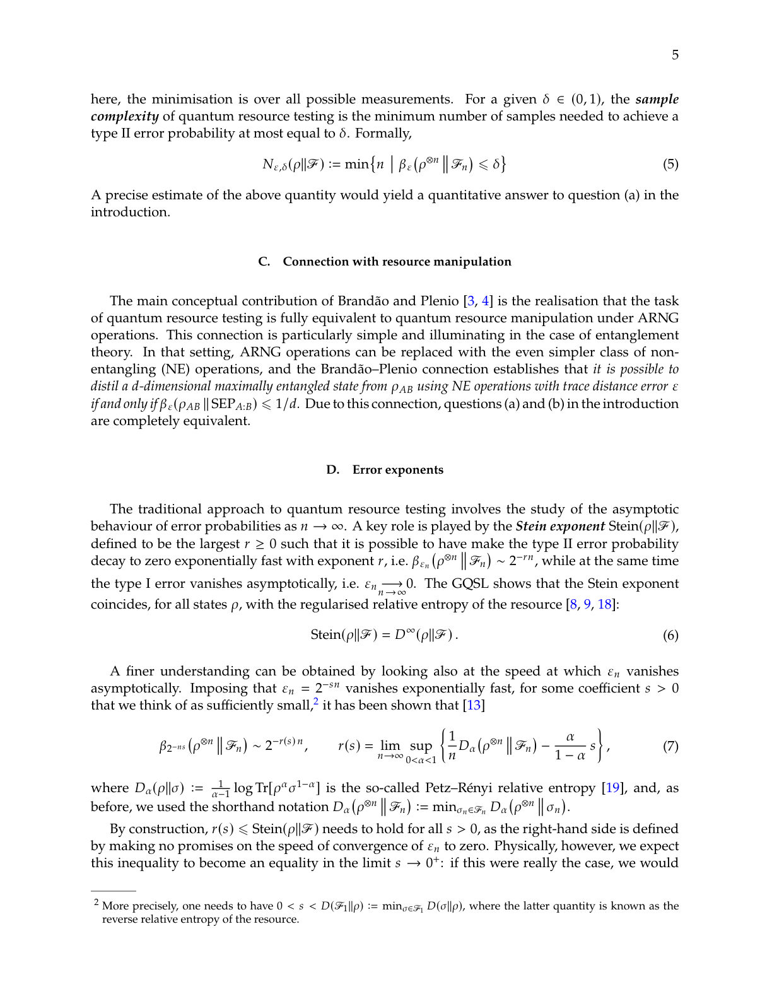
<figcaption class="paper-figure-caption"><b>Fig 4.</b> Low-resolution page preview, page 5</figcaption>
</figure>
<figure class="paper-figure-card">
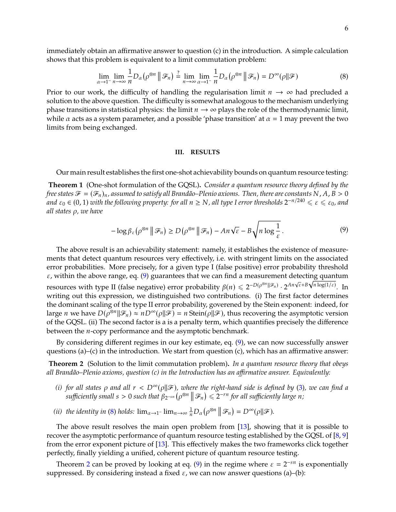
<figcaption class="paper-figure-caption"><b>Fig 5.</b> Low-resolution page preview, page 6</figcaption>
</figure>
</div>

<p><strong>Summary.</strong> This paper develops rigorous finite-sample bounds for quantum resource testing, a process used to verify if a state possesses a specific quantum resource like entanglement. By providing explicit estimates on the number of required copies ($n$), it moves beyond asymptotic theory, resolving key open problems and offering concrete guidelines for experimental implementation in quantum information processing.</p>
<p><strong>Why it may be interesting.</strong> This work provides concrete, experimentally relevant quantitative measures (finite-sample bounds) for fundamental concepts in quantum information theory that were previously only understood asymptotically. This is crucial for designing practical quantum protocols.</p>
<details>
<summary>Detailed structure</summary>
<p><strong>Main problem.</strong> The paper addresses quantum resource testing: discriminating between a resourceful state $
ho^{\otimes n}$ and any free (resourceless) state $F_n$. It aims to provide rigorous, finite-sample bounds for this fundamental task in quantum information processing.</p>
<p><strong>Main result.</strong> The authors establish the first rigorous finite-$n$ sample complexity bound, showing that $O\left(rac{\log(1/\delta)}{D_\infty(
ho\|F)}
ight)$ copies are needed to achieve a desired false negative error probability $\delta$. They also resolve an open problem regarding the convergence of regularised Rényi relative entropies.</p>
<p><strong>Method.</strong> The analysis uses quantum hypothesis testing frameworks, refining techniques related to the generalized quantum Stein's lemma and employing one-shot refinements of quantum blurring techniques.</p>
<p><strong>Model / system.</strong> The theory applies to general quantum resource theories, using specific examples like entanglement (separable states) and nonstabiliser-ness. The core mathematical objects are the resourceful state $
ho$ and the set of free states $F$.</p>
<p><strong>Key observables.</strong> Relative entropy ($D(
ho\|F)$), regularised relative entropy ($D_\infty(
ho\|F)$), and the sample complexity $N_{\epsilon, \delta}(
ho\|F)$.</p>
<p><strong>Important parameters / regimes.</strong> The number of copies ($n$), the false positive error probability ($\epsilon$), and the target false negative error probability ($\delta$).</p>
<p><strong>Assumptions / limitations.</strong> The resource theory must satisfy the Brandão–Plenio axioms for certain theorems to hold. The results move beyond asymptotic limits by providing finite-$n$ estimates.</p>
<p><strong>Figures summary.</strong> Not specified in detail, but notes mention Figure S2 illustrating the behavior of a discrete delta approximant $\mathfrak{q}_r(x)$ constructed using Chebyshev polynomials.</p>
<p><strong>Paper structure.</strong> The paper builds from defining quantum resource testing as hypothesis testing, deriving finite-$n$ bounds by refining asymptotic tools like the GQSL, and concluding with explicit sample complexity estimates for asymmetric testing.</p>
</details>
<details>
<summary>Abstract</summary>
<p>Quantum resource testing is a fundamental primitive of quantum information processing, profoundly connected to resource manipulation. Its goal is to discriminate $n$ copies of a given resourceful state $ρ$ from all free (i.e., resourceless) states; key instances for applications are entanglement testing and quantum magic testing. The asymptotic characterisation relies on the recently proven generalised quantum Stein's lemma, which establishes the rate of decay of the false negative error probability for a fixed false positive error probability. This result, however, is intrinsically asymptotic and thus can provide no finite-resource guarantees, which makes its practical implications unclear. Here, we establish the first rigorous finite-$n$ bounds on quantum resource testing and hence quantum resource manipulation, providing explicit estimates on the number of copies needed to achieve a prescribed performance. As notable consequences, we obtain (a) the convergence of the regularised Rényi relative entropies of a resource, which settles the important open problem from [Fang/Hayashi, IEEE ToIT 72:6, 2026]; and (b) the first sample-complexity bound for asymmetric resource testing: for any fixed false positive error probability, a false negative error probability of at most $δ$ can be achieved with $n=O\left(\frac{\log(1/δ)}{D^\infty(ρ\|F)}\right)$ copies of $ρ$, in the limit where $δ\to 0$.</p>
</details>
<p><sub><a href="#top">↑ back to top</a></sub></p>

<p><a id="paper-2607.24129"></a></p>
<h3 id="local-universality-and-structural-certificates-for-minimal-fixed-depth-two-qutrit-gate-decomposition"><a href="http://arxiv.org/abs/2607.24129v1">Local Universality and Structural Certificates for Minimal Fixed-Depth Two-Qutrit Gate Decomposition</a></h3>
<p><strong>Authors:</strong> Yurui Liu, Ruoting Dou, Peng Xu, Xinsheng Tan, Shengjun Wu, Yang Yu, Zeng-Bing Chen<br>
<strong>Type:</strong> both · <strong>Category:</strong> quantum information and computing · <strong>PDF:</strong> <a href="https://arxiv.org/pdf/2607.24129v1">https://arxiv.org/pdf/2607.24129v1</a><br>
<strong>Analysis basis:</strong> full PDF text, analyzed in chunks
<strong>Topic relevance:</strong> <code>QC/QI experiment</code> <strong>2/5</strong></p>
<div class="figure-strip-hint">↔ Scroll figures horizontally</div>
<div class="paper-figures-scroll">
<figure class="paper-figure-card">
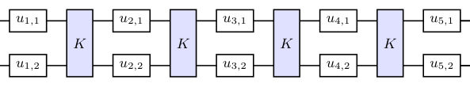
<figcaption class="paper-figure-caption"><b>Fig 1.</b> FIG. 1. Dimension-saturating four-core ansatz. Each local layer is Li = ui,1 ⊗ui,2 ∈SU(3) ⊗SU(3), and the nonlocal core K ∈SU(9) is fixed.</figcaption>
</figure>
<figure class="paper-figure-card">
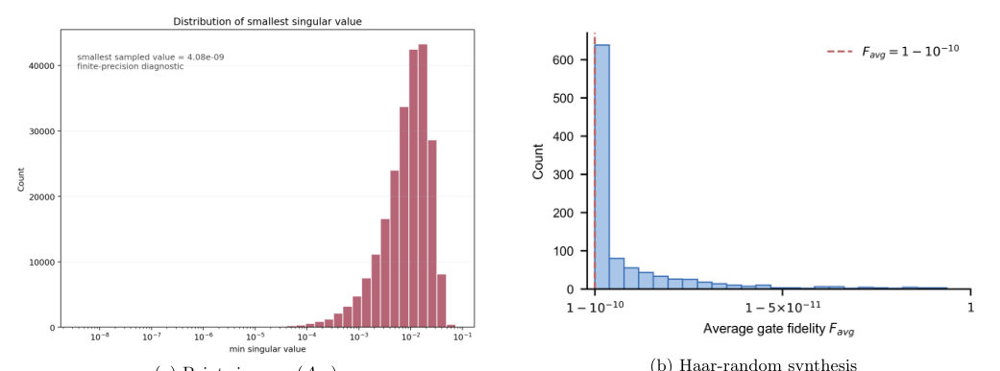
<figcaption class="paper-figure-caption"><b>Fig 2.</b> FIG. 2. Compact Clifford-core diagnostics. Panel (a) shows the distribution of the sampled pointwise smallest singular value σmin(Apt); the smallest recorded value, 4.08 × 10−9, lies well above the numerical rank floor, so no sampled rank collapse occurs. Panel (b) shows high-precision Haar-random synthesis for one randomly selected good Clifford-word core. The dashed line marks Favg = 1 −10−10.</figcaption>
</figure>
<figure class="paper-figure-card">
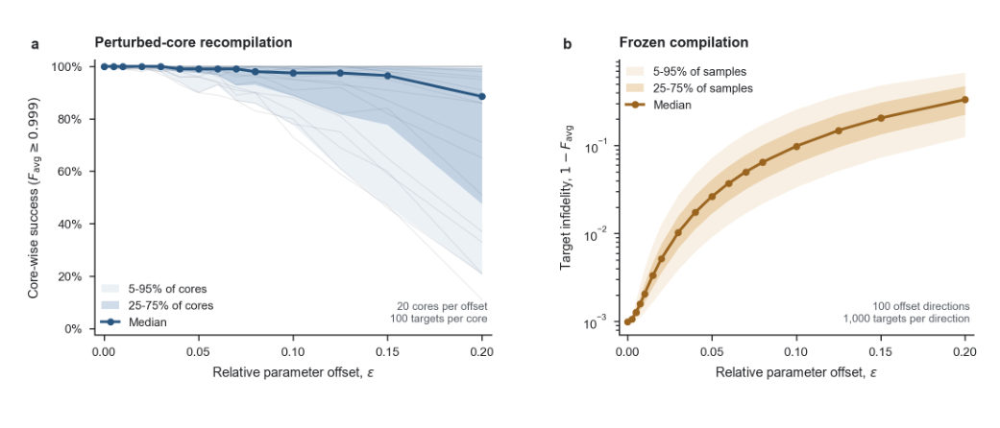
<figcaption class="paper-figure-caption"><b>Fig 3.</b> FIG. 3. Hamiltonian-parameter robustness under shared static coefficient offsets. (a) Perturbed-core recompilation. The nonzero Hamiltonian coefficients are varied multiplicatively along 20 fixed offset directions, while nominally zero coefficients are held at zero. The complete dense scan reuses these directions at each of 14 sampled amplitudes through ϵ = 0.20. Each perturbed core is evaluated on the same 100-target subset, and success means Favg ≥0.999. The line is the median core-wise success fraction, the dark band is the interquartile range, the light band is the 5th–95th percentile range, and faint lines show individual core directions. (b) Frozen-compilation target infidelity under...</figcaption>
</figure>
<figure class="paper-figure-card">
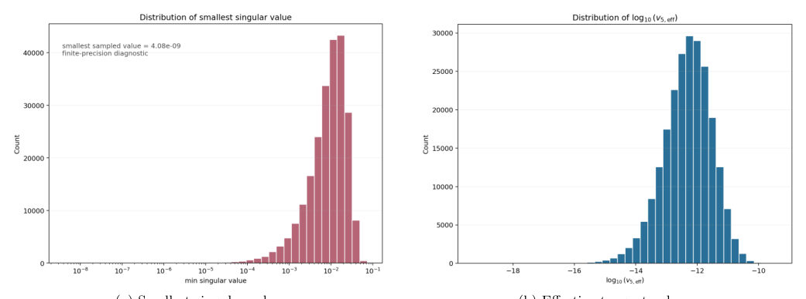
<figcaption class="paper-figure-caption"><b>Fig 4.</b> FIG. 4. Pointwise differential diagnostics for the Clifford-word cores. Panel (a) shows the distribution of σmin(Apt); the smallest recorded value is 4.08 × 10−9, so no sampled configuration reaches the numerical rank floor. Panel (b) shows the distribution of log10(v5,eff). Both panels are finite-precision sampled diagnostics rather than uniform bounds over L5.</figcaption>
</figure>
<figure class="paper-figure-card">
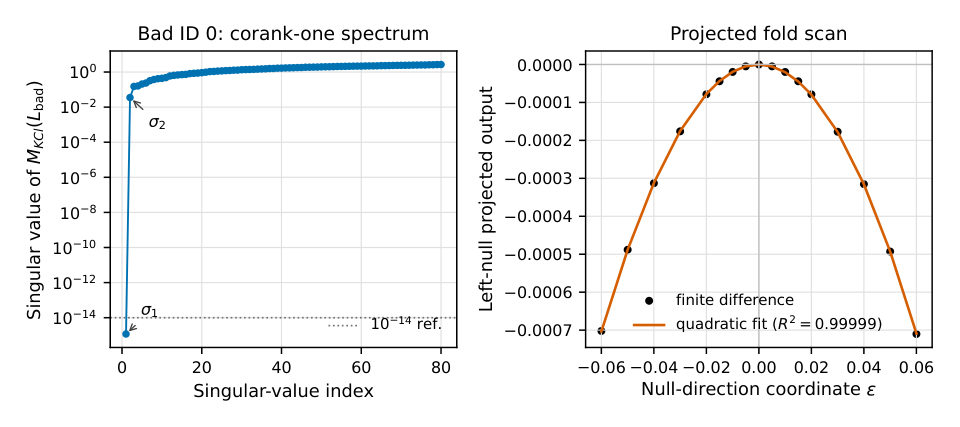
<figcaption class="paper-figure-caption"><b>Fig 5.</b> FIG. 5. Fold-like diagnostics for the Clifford-word core. Left, a representative singular-value spectrum of MKCl(hbad) shows one near-zero singular value at the numerical floor and a visible gap to σ2. Right, a finite-difference scan along the approximate right-null direction, projected onto the left-null direction, is well fit by a quadratic curve. These finite-precision diagnostics are numerically consistent with simple-fold behavior; they are not an interval-certified fold proof.</figcaption>
</figure>
</div>

<p><strong>Summary.</strong> This paper rigorously proves local universality for decomposing two-qutrit gates by constructing a parameter-counting-minimal ansatz and deriving an exact mathematical certificate via differential analysis. It contrasts this theoretical proof with practical hardware testing using superconducting cores, demonstrating high fidelity while respecting structural constraints imposed by gate symmetries.</p>
<p><strong>Why it may be interesting.</strong> This work bridges abstract quantum information theory (local universality proofs) with concrete physical implementations using superconducting qudits. The explicit handling of structural constraints based on symmetry is highly relevant for designing robust, physically realizable quantum circuits.</p>
<details>
<summary>Detailed structure</summary>
<p><strong>Main problem.</strong> The primary goal is determining local universality for decomposing fixed-depth quantum gates acting on two qutrits ($SU(9)$). This involves finding structural certificates proving that the gate set can approximate any target gate within a certain fidelity.</p>
<p><strong>Main result.</strong> Local universality is established using an exact Clifford certificate derived from a parameter-counting-minimal, dimension-saturating ansatz. The study also identifies a structural obstruction for complex-symmetric cores and validates performance with a hardware-motivated core ($K_{sc}$).</p>
<p><strong>Method.</strong> The authors use differential geometry on the gate decomposition map $\Phi_K$, employing the right-trivialized differential to derive local certificates of full rank (local surjectivity). They complement this theory with numerical benchmarking using superconducting circuit models.</p>
<p><strong>Model / system.</strong> The system is a two-qutrit quantum gate space, $SU(9)$. The ansatz uses four fixed copies of a core $K \in SU(9)$ interleaved with five adjustable local layers from $L=SU(3)\otimes SU(3)$.</p>
<p><strong>Key observables.</strong> Local differential rank (must equal 80 for universality), average fidelity ($F_{	ext{avg}} \ge 0.999$), and the minimum singular value ($\sigma_{\min}$) of the Jacobian matrix.</p>
<p><strong>Important parameters / regimes.</strong> The dimension saturation condition ($5 \cdot \dim L = \dim SU(9) = 80$) is crucial; the perturbation amplitude $\epsilon$ was tested up to $0.20$.</p>
<p><strong>Assumptions / limitations.</strong> The results strictly prove <em>local</em> universality, and global surjectivity remains an open question. The numerical diagnostics are interpreted as sampled evidence rather than analytic guarantees.</p>
<p><strong>Figures summary.</strong> Figure 1 illustrates the dimension-saturating four-core ansatz structure; Figure 10 benchmarks structured targets (CZ, CNOT, etc.) for the superconducting core $K_{sc}$ under fixed-budget synthesis.</p>
<p><strong>Paper structure.</strong> The paper first establishes the theoretical framework using differential geometry and provides an exact Clifford certificate. It then analyzes structural obstructions related to symmetry ($K=K^T$). Finally, it validates these findings by applying the theory to a hardware-motivated superconducting core ($K_{sc}$) through numerical testing of fidelity under perturbation.</p>
</details>
<details>
<summary>Abstract</summary>
<p>We study a dimension-saturating fixed-core ansatz in which four copies of a fixed, non-tunable two-qutrit core $K\in SU(9)$ are interleaved with five adjustable local layers from $L=SU(3)\otimes SU(3)$. Since $\dim SU(9)=80$ and $5\dim L=80$, this is the shortest fixed-core architecture not excluded by parameter counting. We formulate the smooth map $Φ_K:L^5\to SU(9)$ and use its right-trivialized differential to give verifiable certificates for local universality. We construct an explicit Clifford-word core whose Pauli-label splitting makes the identity-point differential an exact isometry, and we classify all 2304 symplectic actions satisfying the same splitting criterion. We also prove a structural obstruction for an important symmetry class: every complex-symmetric core $K=K^{T}$, including every core generated by a time-independent real-symmetric Hamiltonian in the chosen computational basis, has identity-point differential rank at most 78; hence any full-rank certificate for such a core must occur away from that point. We then assess a hardware-motivated superconducting core generated by a noncommuting, temporally asymmetric drive. Direct calculation verifies $K_{\rm sc}\neq K_{\rm sc}^{\mathsf T}$, and the core achieves $F_{\rm avg}\ge 0.999$ for all 1000 Haar-random targets tested under the stated restart protocol. We also report favorable sampled Jacobian-rank, structured-target, and robustness diagnostics. These results establish local universality at the parameter-counting-minimal, dimension-saturating depth, with an exact Clifford certificate complemented by a hardware-motivated numerical case study. Throughout, we separate exact local certificates from numerical evidence for broader synthesis performance.</p>
</details>
<p><sub><a href="#top">↑ back to top</a></sub></p>

<p><a id="paper-2607.23510"></a></p>
<h3 id="lossless-address-coding-for-quantum-networks"><a href="http://arxiv.org/abs/2607.23510v1">Lossless Address Coding for Quantum Networks</a></h3>
<p><strong>Authors:</strong> Dick Maryopi<br>
<strong>Type:</strong> theory · <strong>Category:</strong> quantum information and computing · <strong>PDF:</strong> <a href="https://arxiv.org/pdf/2607.23510v1">https://arxiv.org/pdf/2607.23510v1</a><br>
<strong>Analysis basis:</strong> full PDF text, analyzed in chunks
<strong>Topic relevance:</strong> <code>entanglement &amp; information structure</code> <strong>2/5</strong></p>
<div class="figure-strip-hint">↔ Scroll figures horizontally</div>
<div class="paper-figures-scroll">
<figure class="paper-figure-card">
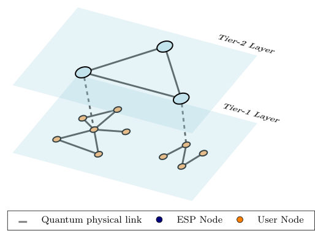
<figcaption class="paper-figure-caption"><b>Fig 1.</b> Fig. 1. A simple hierarchical quantum network model considered in this paper. Network nodes are partitioned into two functional layers: 1) the tier-2 layer serves as an entanglement service provider (ESP), and 2) the tier-1 layer consists of user nodes organized into clusters that consume the distributed entanglement.</figcaption>
</figure>
<figure class="paper-figure-card">
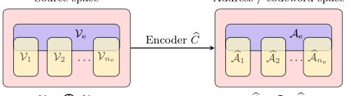
<figcaption class="paper-figure-caption"><b>Fig 2.</b> Fig. 2. Hierarchical decomposition of the source space and its image under isometric encoder bC, which maps each subspace Vj into mutually orthogonal address subspace b Aj .</figcaption>
</figure>
</div>

<p><strong>Summary.</strong> This paper introduces a novel lossless source coding scheme designed to provide coherent and compact addressing within complex quantum networks. By structuring the address space hierarchically using prefix-suffix codes derived from local probability distributions, it ensures unique decodability without needing classical communication of node indices. This offers a practical framework for building scalable quantum infrastructure.</p>
<p><strong>Why it may be interesting.</strong> This work provides a rigorous theoretical link between classical information theory (source coding) and quantum network architecture design, offering concrete methods for scalable quantum resource management.</p>
<details>
<summary>Detailed structure</summary>
<p><strong>Main problem.</strong> The work addresses the critical need for a lossless source coding scheme to manage node identification and resource management in complex, interconnected quantum networks.</p>
<p><strong>Main result.</strong> A hierarchical encoder-decoder structure is proposed that guarantees unique decodability while embedding necessary subspace information directly into the address state without requiring classical side channels.</p>
<p><strong>Method.</strong> The authors model addressing as an information-theoretic lossless source coding problem, utilizing a prefix-suffix address space and constructing isometric operators based on Huffman-like procedures derived from local source matrix diagonalization.</p>
<p><strong>Model / system.</strong> The system is a quantum network modeled as a graph partitioned into functional layers (Tier-2 ESP and Tier-1 User Nodes) and multiple clusters. The addressing function maps nodes to structured quantum address states $|\kappa_j\sigma_{ij}
angle$.</p>
<p><strong>Key observables.</strong> Perfect fidelity ($F(v)=1$) in the encoding/decoding process, isometry error ($\epsilon_{iso}$), and the structure of the resulting codeword state.</p>
<p><strong>Important parameters / regimes.</strong> Cluster sizes, node probabilities derived from source matrices ($
ho_e, 
ho_j$), and the maximum address length $\ell_{\max}$.</p>
<p><strong>Assumptions / limitations.</strong> The scheme assumes an ideal, noise-free environment for its primary demonstration; it also relies on the ability to construct isometries based on local probability distributions.</p>
<p><strong>Figures summary.</strong> Figure 1 illustrates the simple hierarchical quantum network model showing partitioning. Figure 2 (mentioned) illustrates the hierarchical decomposition of the source space $V$ into mutually orthogonal address subspaces $bA_j$.</p>
<p><strong>Paper structure.</strong> The paper establishes the problem by defining the need for coherent addressing, then develops the mathematical framework using prefix-suffix coding and isometric operators derived from local source matrix diagonalization (Huffman procedure), culminating in proofs of unique decodability.</p>
</details>
<details>
<summary>Abstract</summary>
<p>As quantum systems advance toward interconnected architectures, the ability to identify nodes, manage resources, and support network-level functions becomes increasingly critical. In this work, we propose a lossless source coding scheme for addressing in quantum networks that enables compact, hierarchical, and coherently processable quantum address states. Specifically, we introduce a prefix-suffix address space and develop an isometric hierarchical encoder-decoder that guarantees unique decodability. We further provide a practical Huffman-based procedure that embeds prefix-free, length-eigenstate codewords into the address space, thereby preserving isometry. The scheme is particularly designed for networks with hierarchical structure, heterogeneous cluster sizes, and configurable address assignment to accommodate dynamic network conditions. A numerical example on a 13-node network demonstrates that the proposed hierarchical encoding scheme is feasible and achieves perfect fidelity. This work establishes a rigorous connection between source coding theory and quantum network design, offering a practical framework towards scalable and coherent quantum addressing.</p>
</details>
<p><sub><a href="#top">↑ back to top</a></sub></p>

<p><a id="paper-2607.23039"></a></p>
<h3 id="revisiting-the-invariant-ring-of-two-qubit-mixed-states"><a href="http://arxiv.org/abs/2607.23039v1">Revisiting the invariant ring of two-qubit mixed states</a></h3>
<p><strong>Authors:</strong> Bing Xie, Lin Zhang<br>
<strong>Type:</strong> theory · <strong>Category:</strong> quantum information and computing · <strong>PDF:</strong> <a href="https://arxiv.org/pdf/2607.23039v1">https://arxiv.org/pdf/2607.23039v1</a><br>
<strong>Analysis basis:</strong> full PDF text, analyzed in chunks
<strong>Topic relevance:</strong> <code>entanglement &amp; information structure</code> <strong>2/5</strong></p>
<div class="figure-strip-hint">↔ Scroll figures horizontally</div>
<div class="paper-figures-scroll">
<figure class="paper-figure-card">
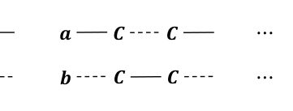
<figcaption class="paper-figure-caption"><b>Fig 1.</b> Figure 2: The graphical representation of some A- and B-type vectors.</figcaption>
</figure>
<figure class="paper-figure-card">
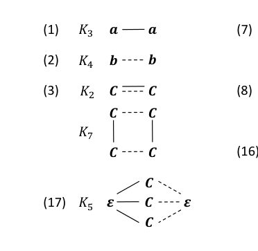
<figcaption class="paper-figure-caption"><b>Fig 2.</b> Figure 3: Some candidate invariants.</figcaption>
</figure>
<figure class="paper-figure-card">
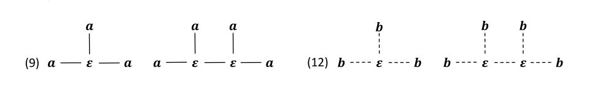
<figcaption class="paper-figure-caption"><b>Fig 3.</b> Figure 5: In both cases (9) and (12), there must be a three-order tensor connecting two identical</figcaption>
</figure>
<figure class="paper-figure-card">
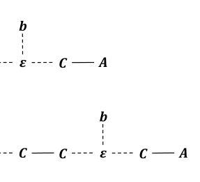
<figcaption class="paper-figure-caption"><b>Fig 4.</b> Figure 6: The two types of invariants in situation (31).</figcaption>
</figure>
<figure class="paper-figure-card">
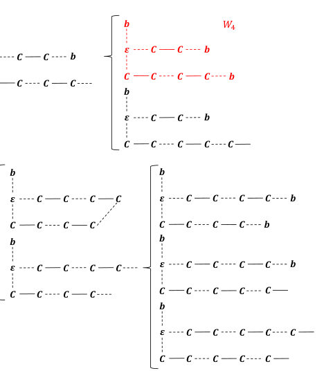
<figcaption class="paper-figure-caption"><b>Fig 5.</b> Figure 7: The single candidate invariant in case (24).</figcaption>
</figure>
</div>

<p><strong>Summary.</strong> This paper tackles the complex problem of finding all polynomial invariants that characterize two-qubit mixed states under local unitary transformations. By rigorously deriving the Molien series and employing a systematic graphical method, the authors provide a complete generating set of 21 such invariants. This work is crucial for advancing the mathematical understanding of entanglement classification in quantum information theory.</p>
<p><strong>Why it may be interesting.</strong> Understanding local unitary invariants is fundamental for classifying entanglement in quantum information protocols; this provides concrete mathematical tools for that classification.</p>
<details>
<summary>Detailed structure</summary>
<p><strong>Main problem.</strong> The central problem is mathematically characterizing the invariant ring associated with local unitary (LU) equivalence for two-qubit mixed quantum states.</p>
<p><strong>Main result.</strong> The authors rigorously derive the Molien series and systematically construct a generating set consisting of 21 polynomial invariants that characterize this invariant ring.</p>
<p><strong>Method.</strong> The work combines advanced tools from Invariant Theory, including calculating the Molien series via contour integration and constructing generators using an explicit graphical tensor method.</p>
<p><strong>Model / system.</strong> The system analyzed is a two-qubit quantum state described by its density matrix $\rho$, which is studied under the action of local unitary groups $G = \text{GL}_A(2) \times \text{GL}_B(2)$.</p>
<p><strong>Key observables.</strong> Local Unitary (LU) invariants, the invariant ring $\mathbb{C}[V]^G$, and the Molien series $M(q)$ are key mathematical observables.</p>
<p><strong>Important parameters / regimes.</strong> The system size is fixed to two qubits; the analysis relies on properties derived from the Pauli matrix basis expansion.</p>
<p><strong>Assumptions / limitations.</strong> It assumes that the invariant ring is finitely generated and Cohen-Macaulay, building upon prior work by King et al.</p>
<p><strong>Figures summary.</strong> Figures illustrate complete enumeration diagrams for constructing candidate invariants in various cases related to the two-qubit system structure.</p>
<p><strong>Paper structure.</strong> The paper revisits established results by first rigorously deriving the Molien series via contour integration, and then systematically presenting the construction of all 21 generators using a detailed graphical method.</p>
</details>
<details>
<summary>Abstract</summary>
<p>Local unitary equivalence serves as the cornerstone for classifying entanglement in bipartite quantum systems. Mathematically, it reduces to the study of polynomial invariants of the density matrix under the action of local unitary groups. The collection of all such polynomial invariants forms a ring, known as the invariant ring. However, identifying the complete generators of the invariant ring is the central issue. In 2007, for the two-qubit system, King et al fully characterized the structure of the invariant ring and determined its Cohen--Macaulay decomposition. In this paper, we revisit their work, with a focus on the computation of the Molien series and the construction of invariants. On one hand, we rigorously derive the Molien series via explicit contour integration over the maximal torus, filling in all previously omitted computational steps. On the other hand, we systematically construct all invariants using a graphical method, and then reduce the candidate set by applying various identities and algebraic relations, obtaining a generating set consisting of 21 invariants. This paper aims to make this important result more widely accessible to researchers in quantum information and invariant theory through the above discussions.</p>
</details>
<p><sub><a href="#top">↑ back to top</a></sub></p>

<p><a id="paper-2607.22992"></a></p>
<h3 id="role-of-math1159math-math1160math-hybridization-on-optical-properties-of-chalcopyrite-semiconductors"><a href="http://arxiv.org/abs/2607.22992v1">Role of $p$-$d$ Hybridization on Optical Properties of Chalcopyrite Semiconductors</a></h3>
<p><strong>Authors:</strong> Neunghee Han, Harang Kim, Minjae Kim, Woonhyuk Baek<br>
<strong>Type:</strong> both · <strong>Category:</strong> strongly correlated electrons · <strong>PDF:</strong> <a href="https://arxiv.org/pdf/2607.22992v1">https://arxiv.org/pdf/2607.22992v1</a><br>
<strong>Analysis basis:</strong> full PDF text, analyzed in chunks
<strong>Topic relevance:</strong> <code>Keldysh / 2PI / non-Gaussian methods</code> <strong>1/5</strong> · <code>Kondo &amp; dissipative impurity</code> <strong>1/5</strong> · <code>analog quantum simulation</code> <strong>1/5</strong> · <code>correlated / nonlocal dissipation</code> <strong>1/5</strong> · <code>driven-dissipative phase transition</code> <strong>1/5</strong> · <code>methods for driven-dissipative</code> <strong>1/5</strong> · <code>non-equilibrium dynamics</code> <strong>1/5</strong></p>
<div class="figure-strip-hint">↔ Scroll figures horizontally</div>
<div class="paper-figures-scroll">
<figure class="paper-figure-card">
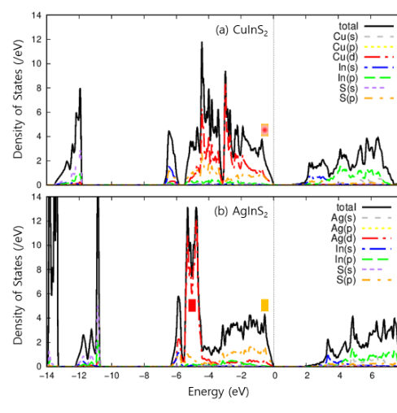
<figcaption class="paper-figure-caption"><b>Fig 1.</b> Figure 1. (a) Density of states of CuInS2 bulk. The bar with a color gradient presents the energy for the Cu(d)-S(p) hybridized peak structure in the density of states. (b) Den- sity of states of AgInS2 bulk. The red and orange colored bars present the energies for the Ag(d) and the S(p) dominant den- sity of states, respectively, having a smaller p-d hybridization compared to the case of CuInS2. The total density of states are for the formula unit.</figcaption>
</figure>
<figure class="paper-figure-card">

<figcaption class="paper-figure-caption"><b>Fig 2.</b> Figure 1 presents the density of states of pristine CuInS2 and AgInS2 bulk. In the nominal ionic state, transition metal (TM), In, and S atoms have a valency of [TM]1+In3+S2− 2 . For the d10 configuration of the [TM]1+</figcaption>
</figure>
<figure class="paper-figure-card">
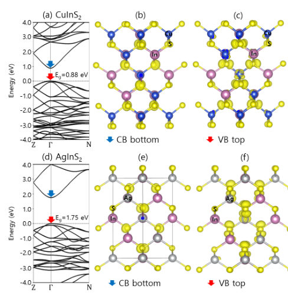
<figcaption class="paper-figure-caption"><b>Fig 3.</b> Figure 2. (a) The band structure of CuInS2 bulk. The direct band gap (Eg) at k = Γ is 0.88 eV. (b, c) The charge densities for the wave function of (b) the conduction band (CB) bottom and (c) the valence band (VB) top at k = Γ are presented, indicated by blue and red arrows in (a), respectively. (d) The band structure of AgInS2 bulk. The direct band gap (Eg) at k = Γ is 1.75 eV. (e, f) The charge densities for the wave function of (e) the conduction band (CB) bottom and (f) the valence band (VB) top at k = Γ are presented, indicated by blue and red arrows in (d), respectively. The contour for the charge densities is set to 0.002 e/Å3.</figcaption>
</figure>
<figure class="paper-figure-card">
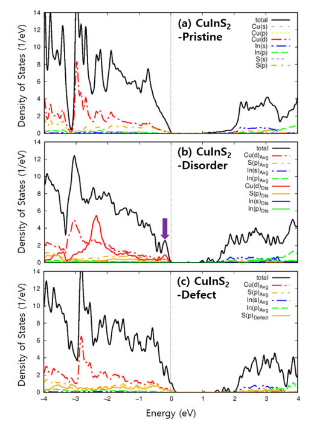
<figcaption class="paper-figure-caption"><b>Fig 4.</b> Figure 3. (a, b, c) The electronic structures of CuInS2 bulk for (a) the pristine structure, (b) the anti-site disorder of Cu- In, and (c) the defect from the Cu deficiency. See the main text for the details of the structures. Averaged values over the supercell structure are presented by Avg. The disordered Cu and In sites, and the nearest neighboring S sites are presented by Dis. The nearest neighboring S sites from the Cu defect site is presented by Defect. The total density of states are for the unit cell of the pristine structure. The purple arrow in (b) presents the anti-site disorder driven defect states at the Cu site, strongly hybridized with its environment atoms’ orbital.</figcaption>
</figure>
<figure class="paper-figure-card">
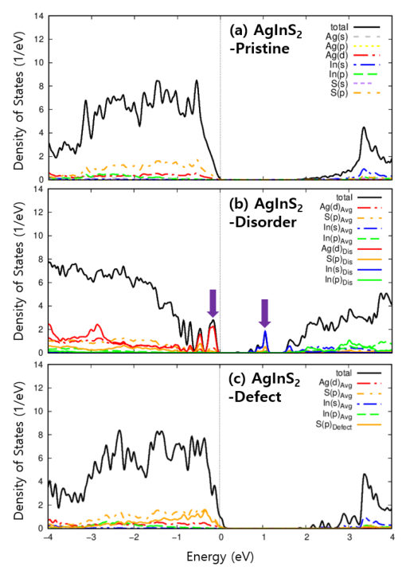
<figcaption class="paper-figure-caption"><b>Fig 5.</b> Figure 4. (a, b, c) The electronic structures of AgInS2 bulk for (a) the pristine structure, (b) the anti-site disorder of Ag- In, and (c) the defect from the Ag deficiency. See the main text for the details of the structures. Averaged values over the supercell structure are presented by Avg. The disordered Ag and In sites, and the nearest neighboring S sites are presented by Dis. The nearest neighboring S sites from the Ag defect site is presented by Defect. The total density of states are for the unit cell of the pristine structure. The purple arrows in (b) present the anti-site disorder driven defect states at the Cu and In sites, strongly localized and disconnected from environment...</figcaption>
</figure>
</div>

<p><strong>Summary.</strong> The paper investigates how the hybridization between transition metal $d$ and ligand $p$ orbitals dictates the optical coherence in chalcopyrite semiconductor quantum dots. Using advanced DFT calculations, the authors show that strong $p$-$d$ coupling induces detrimental Coulomb scattering channels. They conclude that to achieve coherent optical emission, material design must minimize this specific type of orbital hybridization in the photo-excited carriers.</p>
<p><strong>Why it may be interesting.</strong> This work directly addresses open quantum systems dynamics (coherence loss) in solid-state nanostructures by linking electronic structure theory (Hubbard models/correlation effects) to measurable optical properties. The concept of hybridization controlling scattering channels is highly relevant for designing robust quantum emitters.</p>
<details>
<summary>Detailed structure</summary>
<p><strong>Main problem.</strong> The central challenge is designing quantum materials with coherent optical properties, as structural and compositional inhomogeneity degrades coherence in semiconductor quantum dots.</p>
<p><strong>Main result.</strong> Strong $p$-$d$ hybridization in the photo-doped carrier leads to $   ext{Cu}(d)$ Coulomb scattering, which causes an incoherent optical response; thus, avoiding this character is key for coherence.</p>
<p><strong>Method.</strong> The study combines first-principles electronic structure calculations (DFT+U+V) with analysis of experimental optical spectroscopy on chalcopyrite semiconductors.</p>
<p><strong>Model / system.</strong> The system under investigation is chalcopyrite semiconductor quantum dots ($    ext{I–III–VI}<em 1-x>2$), specifically comparing $ ext{CuInS}_2$ and $ ext{AgInS}_2$, and analyzing doped variants like $  ext{Ag}</em>}   ext{Cu<em 1-y>x   ext{In}</em>_2$.}   ext{Ga}_y   ext{S</p>
<p><strong>Key observables.</strong> Optical spectra, band gap energy ($E_g$), charge densities showing $p$-$d$ hybridization strength, and photoluminescence (PL) lifetime changes.</p>
<p><strong>Important parameters / regimes.</strong> The degree of $p$-$d$ hybridization (strong vs. weak), the concentration ratio of $   ext{Cu}$ doping ($x$), and Hubbard parameters ($U$, $V$).</p>
<p><strong>Assumptions / limitations.</strong> The analysis relies on DFT+U+V calculations to model strong electronic correlations, which is necessary because simple DFT fails to capture the localized nature of $d$ electrons.</p>
<p><strong>Figures summary.</strong> Figures compare calculated DOS and charge densities for different chalcopyrites, showing hybridization differences; experimental PL spectra track spectral shifts and broadening upon Cu doping, correlating with scattering mechanisms.</p>
<p><strong>Paper structure.</strong> The paper establishes the problem (coherence loss in QDs), uses theory ($  ext{DFT}+   ext{U}+ ext{V}$) to model $ ext{CuInS}_2$ vs. $ ext{AgInS}_2$, and then applies these principles to interpret experimental PL data on doped materials, concluding with design guidelines.</p>
</details>
<details>
<summary>Abstract</summary>
<p>Designing quantum materials for coherent optical properties is a central agenda in quantum technology. Semiconductor quantum dots are an emerging approach for controlling coherent optical properties via confinement effects, tunable band gaps, and exciton binding energies, yet their inherent structural and compositional inhomogeneity degrades the coherence of the optical spectra, posing a major obstacle. We show that, for chalcopyrite semiconductors, hybridization between transition-metal $d$ and ligand $p$ electrons in the valence band is key to the coherence of the quantum dot optical spectrum. We demonstrate this using first-principles electronic-structure calculations and optical spectroscopy. The strong $p$-$d$ hybridization in CuInS$_{2}$ induces the Cu($d$) Coulomb scattering channel, giving rise to the incoherent photodoped hole carrier, while the weak $p$-$d$ hybridization in AgInS$_{2}$ induces the delocalized photodoped hole carrier having a predominant S($p$) orbital character. Our experimental results on optical spectra suggest that when the Cu ratio is enhanced in the Ag$_{1-x}$Cu$_{x}$In$_{1-y}$Ga$_{y}$S$_{2}$ quantum dot, Cu atoms at both Ag sites and defect sites experience enhanced $p$-$d$ hybridization, and a coupling begins to develop between the electrons in the quantum dot and the defect electrons at a small Cu ratio. This coupling activates Cu($d$) Coulomb scattering for photodoped holes traversing the defect sites, producing an incoherent optical response that naturally explains the long-standing absence of band-edge spectral signatures in CuIn$_{1-y}$Ga$_y$S$_2$ quantum dots. These results serve as a guideline for designing semiconductor quantum dots. To achieve a coherent optical spectrum, avoid $p$-$d$-hybridized orbital character in the photo-doped carrier.</p>
</details>
<p><sub><a href="#top">↑ back to top</a></sub></p>

<p><a id="paper-2607.22998"></a></p>
<h3 id="a-resource-estimation-model-for-the-hardware-software-co-design-of-distributed-quantum-architectures"><a href="http://arxiv.org/abs/2607.22998v1">A Resource Estimation Model for the Hardware-Software Co-Design of Distributed Quantum Architectures</a></h3>
<p><strong>Authors:</strong> Raymond P. H. Wu, Chathurika Ranaweera, Sutharshan Rajasegarar, Ria Rushin Joseph, Jinho Choi, Seng W. Loke<br>
<strong>Type:</strong> theory · <strong>Category:</strong> quantum information and computing · <strong>PDF:</strong> <a href="https://arxiv.org/pdf/2607.22998v1">https://arxiv.org/pdf/2607.22998v1</a><br>
<strong>Analysis basis:</strong> full PDF text, analyzed in chunks
<strong>Topic relevance:</strong> <code>analog quantum simulation</code> <strong>1/5</strong> · <code>correlated / nonlocal dissipation</code> <strong>1/5</strong> · <code>driven-dissipative phase transition</code> <strong>1/5</strong> · <code>entanglement &amp; information structure</code> <strong>1/5</strong> · <code>methods for driven-dissipative</code> <strong>1/5</strong> · <code>non-equilibrium dynamics</code> <strong>1/5</strong></p>
<div class="figure-strip-hint">↔ Scroll figures horizontally</div>
<div class="paper-figures-scroll">
<figure class="paper-figure-card">
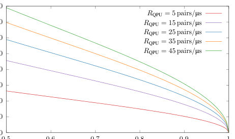
<figcaption class="paper-figure-caption"><b>Fig 1.</b> Fig. 1. Estimation of the optimal number of communication qubits for distributed quantum architectures.</figcaption>
</figure>
</div>

<p><strong>Summary.</strong> This paper introduces an economic model based on perishable inventory theory to optimize the allocation of communication qubits in distributed quantum computing architectures. It quantifies the critical trade-off between minimizing network latency and mitigating decoherence losses. The resulting framework offers actionable guidelines for both hardware designers setting static resource budgets and software compilers managing dynamic reservations.</p>
<p><strong>Why it may be interesting.</strong> While focused on DQC resource management rather than fundamental AMO physics, the underlying principles of managing finite resources under decoherence (like inventory control) are highly relevant to designing robust quantum communication protocols in trapped ion or superconducting qubit systems.</p>
<details>
<summary>Detailed structure</summary>
<p><strong>Main problem.</strong> The core problem is optimizing resource allocation in Distributed Quantum Computing (DQC) by balancing the trade-off between entanglement distribution latency and decoherence time.</p>
<p><strong>Main result.</strong> The authors propose an optimal number of communication qubits ($N_{comm}^*$) derived from minimizing a total system cost function, providing guidance for both hardware architects and compiler developers.</p>
<p><strong>Method.</strong> They adapt an Economic Order Quantity (EOQ) model from perishable inventory theory to quantify the time cost associated with entanglement distribution delays versus decoherence penalties.</p>
<p><strong>Model / system.</strong> The study models DQC across interconnected Quantum Processing Units (QPUs), where qubits are split into computational and communication roles. The optimization is governed by a total system time cost function incorporating latency, physical execution costs, and decoherence rates.</p>
<p><strong>Key observables.</strong> Total system time cost $C(N_{comm})$, optimal number of communication qubits ($N_{comm}^*$), entanglement demand rate ($R_{QPU}$).</p>
<p><strong>Important parameters / regimes.</strong> Coherence time ($T_2$), algorithmic fidelity threshold ($F_{th}$), network latency costs ($C_{lat}, c_{lat}$), and the QPU demand rate ($R_{QPU}$).</p>
<p><strong>Assumptions / limitations.</strong> The model assumes continuous consumption of entanglement resources, using time-averaged rates; a proactive cutoff strategy is employed to manage decoherence by discarding pairs exceeding a maximum usable lifetime.</p>
<p><strong>Figures summary.</strong> Figure 1a illustrates the trade-off between latency cost and decoherence cost versus $N_{comm}$, while Figure 1b shows how the optimal $N_{comm}^*$ changes as a function of the fidelity threshold ($F_{th}$).</p>
<p><strong>Paper structure.</strong> The paper develops the mathematical model by defining the total time cost, deriving the unconstrained optimum, and then incorporating physical constraints from coherence time to yield the final piecewise minimum estimate.</p>
</details>
<details>
<summary>Abstract</summary>
<p>In distributed quantum computing (DQC), executing monolithic quantum circuits across multiple interconnected quantum processing units (QPUs) requires dedicated communication qubits to generate and distribute entanglement. Because the number of physical qubits within a QPU is finite, a trade-off emerges where allocating more communication qubits increases the capacity of quantum channels for concurrent non-local operations, but reduces the number of computational qubits available for local gate operations. Distributed quantum compilation routinely ignores this channel capacity, while hardware architects lack a method to determine it prior to quantum circuit partitioning. Moreover, scheduling entanglement on demand introduces severe latency, whereas pre-fetching exposes stored pairs to decoherence. We propose an economic order quantity model from perishable inventory theory to optimize the trade-off between entanglement distribution latency and the time cost of decoherence. The resulting estimate is driven by algorithmic demand and physical constraints, offering a dual application for the hardware-software co-design of high-performance DQC: for hardware architects, it gives the optimal allocation of dedicated communication qubits in static heterogeneous architectures; for compiler developers, it gives the optimal number to reserve dynamically in homogeneous architectures.</p>
</details>
<p><sub><a href="#top">↑ back to top</a></sub></p>

<p><a id="paper-2607.23768"></a></p>
<h3 id="nanoscale-linear-response-of-strongly-disordered-stable-solids"><a href="http://arxiv.org/abs/2607.23768v1">Nanoscale linear response of strongly disordered stable solids</a></h3>
<p><strong>Authors:</strong> D. V. Babin, I. O. Raikov, Y. M. Beltukov<br>
<strong>Type:</strong> theory · <strong>Category:</strong> disordered systems and neural networks · <strong>PDF:</strong> <a href="https://arxiv.org/pdf/2607.23768v1">https://arxiv.org/pdf/2607.23768v1</a><br>
<strong>Analysis basis:</strong> full PDF text, analyzed in chunks
<strong>Topic relevance:</strong> <code>Frenkel-Kontorova</code> <strong>1/5</strong> · <code>Keldysh / 2PI / non-Gaussian methods</code> <strong>1/5</strong> · <code>analog quantum simulation</code> <strong>1/5</strong> · <code>correlated / nonlocal dissipation</code> <strong>1/5</strong> · <code>methods for driven-dissipative</code> <strong>1/5</strong></p>
<div class="figure-strip-hint">↔ Scroll figures horizontally</div>
<div class="paper-figures-scroll">
<figure class="paper-figure-card">
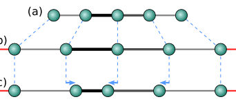
<figcaption class="paper-figure-caption"><b>Fig 1.</b> FIG. 1. One-dimensional illustration of nonaffine deforma- tion in a chain of particles connected by bonds of unequal stiffness, represented by the thickness and color of the hori- zontal lines. (a) Undeformed chain. (b) Affine deformation, for which all bonds undergo the same relative extension. (c) Energy-minimizing nonaffine deformation at the same total elongation of the chain. The nonaffine displacements relative to the affine configuration are indicated by blue arrows, and the dashed blue lines are visual guides.</figcaption>
</figure>
<figure class="paper-figure-card">
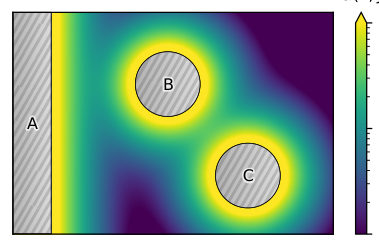
<figcaption class="paper-figure-caption"><b>Fig 2.</b> FIG. 2. Two-dimensional illustration of the spatial stiffen- ing of an amorphous matrix caused by the suppression of nonaffine deformations near rigid inclusions, as described by Eq. (1). The hatched gray regions represent a planar rigid boundary (A) and two circular inclusions (B, C). The sur- rounding amorphous matrix is colored according to its effec- tive stiffness. The yellow regions correspond to the strongest suppression of nonaffine relaxation and, consequently, to the largest stiffness enhancement. The disorder length is chosen as ξ = R/2, where R is the radius of the circular inclusions.</figcaption>
</figure>
<figure class="paper-figure-card">

<figcaption class="paper-figure-caption"><b>Fig 3.</b> FIG. 3. Graphical presentation of the ladder series given by Eq. (32) and its factorized presentation using eigenoperator decomposition (38). See Appendices A and B for a more detailed explanation of the diagrams.</figcaption>
</figure>
<figure class="paper-figure-card">

<figcaption class="paper-figure-caption"><b>Fig 4.</b> FIG. 4. Schematic illustration of the branches σnp (color lines) and discrete eigenvalues σv for the finite system (color points) for σ0 = 0.97. The vertical dotted lines show the position of pξ0 ∼1.</figcaption>
</figure>
<figure class="paper-figure-card">

<figcaption class="paper-figure-caption"><b>Fig 5.</b> FIG. 6. One-dimensional solutions of Eq. (85) for different values of the parameter η: (a) η = 1, (b) η = 0.5, and (c) η = 0. Different lines correspond to different boundary values α(±W/2) = αb at the edges of the displayed region of width W = 6ξ. Solutions with integer values of αb are represented by black lines. Dashed lines shows the limiting solutions for minimum αb = −1 and maximum αb = ∞possible values if such a solution exists.</figcaption>
</figure>
</div>

<p><strong>Summary.</strong> This work develops a modified continuum theory to describe how strongly disordered solids respond elastically at the nanoscale. It shows that disorder averaging leads to an effective contrast field, which quantifies systematic stiffening around rigid features like nanoparticles. The findings are confirmed via molecular dynamics simulations of glassy materials.</p>
<p><strong>Why it may be interesting.</strong> While focused on classical elasticity, the mathematical techniques used—disorder averaging, effective medium theories, and characterizing spatial correlations ($\xi$)—are highly relevant to understanding localization phenomena in quantum systems or modeling complex energy landscapes in AMO physics.</p>
<details>
<summary>Detailed structure</summary>
<p><strong>Main problem.</strong> The paper addresses how to describe the nanoscale linear response of strongly disordered stable solids where conventional continuum theories fail due to significant spatial heterogeneity.</p>
<p><strong>Main result.</strong> The disorder-averaged response can be modeled by a modified continuum theory, which predicts that in the strong disorder limit, the long-wavelength behavior is governed by a scalar disorder-induced contrast field describing stiff shells around inclusions.</p>
<p><strong>Method.</strong> The approach involves using a disorder-averaged linear response framework applied to the force-constant matrix of the solid, leading to an effective continuum description.</p>
<p><strong>Model / system.</strong> The system studied is amorphous or structurally disordered solids (like glasses or polymers) analyzed near equilibrium. The theory uses elastic response principles derived from minimizing potential energy subject to disorder averaging.</p>
<p><strong>Key observables.</strong> Nonlocal Elastic Contrast Field ($\alpha(r)$), which quantifies systematic spatial stiffening; the disorder-averaged linear response coefficients.</p>
<p><strong>Important parameters / regimes.</strong> The nonaffine length ($\xi$), characterizing the scale of local strain fluctuations, and the temperature regime ($T \ll T_g$).</p>
<p><strong>Assumptions / limitations.</strong> The theory relies on a disorder-averaged approach and initially assumes conditions that allow reduction to a scalar contrast field, though generalizations are discussed.</p>
<p><strong>Figures summary.</strong> Figure 1 illustrates nonaffine deformation in a 1D chain comparing undeformed, affine, and energy-minimizing nonaffine states. Figure 2 shows spatial stiffening around rigid inclusions due to suppressed nonaffine relaxation.</p>
<p><strong>Paper structure.</strong> The paper develops the theory by first establishing the need for modified continuum descriptions, deriving equations for the disorder-averaged Green functions, and then solving for the contrast field $\alpha(r)$ which governs the long-wavelength response in the strong disorder limit.</p>
</details>
<details>
<summary>Abstract</summary>
<p>Strongly disordered solids exhibit distinctive properties at the nanoscale, where conventional continuum theory breaks down. We show that their disorder-averaged linear response can be described by a modified continuum theory in which the response coefficients are local but depend nonlocally on the structural properties. The stability criterion requires the response operator to be positive semidefinite, which naturally leads to a correlated Wishart disorder. In the limit of strong disorder, these equations reduce the long-wavelength response to a scalar disorder-induced contrast field. In elasticity, this field describes the formation of a stiff shell around rigid nanoparticles and boundaries, whose characteristic extent is set by the nonaffine length. The predictions are confirmed by molecular-dynamics simulations of a Lennard-Jones glass and a model polymer. Direct calculation of the nonlocal elastic kernels further shows that the response is predominantly local on the scale of the stiffened interphase.</p>
</details>
<p><sub><a href="#top">↑ back to top</a></sub></p>

<p><a id="paper-2607.24455"></a></p>
<h3 id="a-grand-canonical-solution-to-a-class-of-random-optimization-problems"><a href="http://arxiv.org/abs/2607.24455v1">A Grand-Canonical Solution to a Class of Random Optimization Problems</a></h3>
<p><strong>Authors:</strong> Izat B Baybusinov, Enrico M Fenoaltea, Zhen Han, Yi-Cheng Zhang<br>
<strong>Type:</strong> theory · <strong>Category:</strong> disordered systems and neural networks · <strong>PDF:</strong> <a href="https://arxiv.org/pdf/2607.24455v1">https://arxiv.org/pdf/2607.24455v1</a><br>
<strong>Analysis basis:</strong> full PDF text, analyzed in chunks
<strong>Topic relevance:</strong> <code>Keldysh / 2PI / non-Gaussian methods</code> <strong>1/5</strong> · <code>analog quantum simulation</code> <strong>1/5</strong> · <code>driven-dissipative phase transition</code> <strong>1/5</strong> · <code>methods for driven-dissipative</code> <strong>1/5</strong></p>
<div class="figure-strip-hint">↔ Scroll figures horizontally</div>
<div class="paper-figures-scroll">
<figure class="paper-figure-card">

<figcaption class="paper-figure-caption"><b>Fig 1.</b> Figure 1: Distribution of energies computed from Eq. (11) over 5000 realizations for a system of N = 100 sites with β = 600. The top panel (a) corresponds to the matching problem (k = 1), and the bottom panel (b) to the minimum weight 2-factor problem (k = 2). The solid gray lines represent the classical solutions derived in [19, 38], while the black dashed line denotes the numerical sample average. The insets show the average energy as a function of β and N, where the shaded region indicates the standard deviation and the dashed line shows the theoretical values. Note that the averages shown in the insets are necessarily computed at large but finite N and β, respectively. The theoretical...</figcaption>
</figure>
<figure class="paper-figure-card">

<figcaption class="paper-figure-caption"><b>Fig 2.</b> Figure 2: Chemical potential of agent i versus the average energy computed over the bottom 5% of energies for agent i, i.e., ⟨Eij⟩bottom 5% j. The points are taken from 5000 realizations with N = 100 and β = 600, with k = 1 in panel (a) and k = 2 in panel (b). In general, the higher the chemical potential of an agent, the less inclined the agent is to form connections in the grand-canonical framework. In the legends, r is the Pearson correlation coefficient.</figcaption>
</figure>
<figure class="paper-figure-card">

<figcaption class="paper-figure-caption"><b>Fig 3.</b> Figure 3: Distribution of the variables {µi}i=1,..,N for k = 1 (top panel) and k = 2 (bottom panel) with N = 100 and β = 600. The blue bars show a single realization while the black lines correspond to an average over 10 realizations. One realization of the system can describe the probability distribution, suggesting a self averaging behavior.</figcaption>
</figure>
</div>

<p><strong>Summary.</strong> This work introduces a powerful theoretical framework that maps difficult random combinatorial optimization problems onto the language of statistical physics using the grand-canonical ensemble. By introducing chemical potentials, it relaxes strict topological constraints, yielding an analytical approach to approximate minimum energy solutions for problems like TSP and matching.</p>
<p><strong>Why it may be interesting.</strong> While focused on classical optimization, the use of statistical mechanics tools (grand-canonical ensemble, chemical potentials) to solve hard combinatorial constraints is highly relevant to understanding phase transitions and ground states in complex quantum systems or neural network models.</p>
<details>
<summary>Detailed structure</summary>
<p><strong>Main problem.</strong> The paper addresses solving complex combinatorial optimization problems, such as TSP and minimum weight k-factor problems, when the underlying weights are random.</p>
<p><strong>Main result.</strong> They developed a general framework using the grand-canonical ensemble that provides an analytical solution leading to a polynomial-time approximation algorithm for finding the approximate minimum cost.</p>
<p><strong>Method.</strong> The core method involves recasting the optimization problem into a statistical physics framework by introducing chemical potentials ($\mu_i$) to relax strict topological constraints, allowing calculation via the partition function in the grand-canonical ensemble.</p>
<p><strong>Model / system.</strong> The model is an agent network whose configuration is described by a matrix $V$ (or $X$), and the energy/Hamiltonian $ ilde{H}[V]$ sums over pairwise connection energies $E_{ij}$. This framework was successfully applied to known problems like matching and TSP.</p>
<p><strong>Key observables.</strong> The average ground-state energy ($\langle U_{\min} 
angle_{\epsilon}$), chemical potentials ($\mu_i$), and the link probability matrix ($V_{ij}$).</p>
<p><strong>Important parameters / regimes.</strong> Inverse temperature ($eta$) and the required fixed average degree ($k$). The thermodynamic limit ($eta 	o \infty$ or $N 	o \infty$) is a key regime.</p>
<p><strong>Assumptions / limitations.</strong> The method relies on reformulating hard constraints into average constraints via Lagrangian relaxation, which is justified in the thermodynamic limit for certain problems.</p>
<p><strong>Figures summary.</strong> Figure B.1 illustrates accuracy vs. inverse temperature ($eta$) for matching; Algorithm 2 details a greedy procedure to refine a 2-factor solution into an approximate Hamiltonian cycle.</p>
<p><strong>Paper structure.</strong> The paper introduces the general framework by defining the energy function and recasting it in the grand-canonical ensemble. It then derives the average ground-state energy, showing its applicability to specific problems like TSP and matching, culminating in a proposed greedy algorithm for refinement.</p>
</details>
<details>
<summary>Abstract</summary>
<p>We introduce a general framework to solve a class of combinatorial opti- mization problems, including the matching problem, the Traveling Salesman Problem, and also the minimum weight k-factor problem. By reformulating these problems as an arrangement model, we recast the optimization task into a grand-canonical ensemble, where chemical potentials are used to re- lax strict topological constraints. The analytical solution found can serve as a polynomial-time algorithm to compute an approximate minimum cost for arbitrary k and link-weight distributions. Our framework is complementary to existing approaches and reveals new connections between combinatorial optimization and the statistical physics of disordered systems.</p>
</details>
<p><sub><a href="#top">↑ back to top</a></sub></p>

<p><a id="paper-2607.24231"></a></p>
<h3 id="distinct-finite-temperature-phase-diagrams-of-non-invertible-kennedy-tasaki-duals"><a href="http://arxiv.org/abs/2607.24231v1">Distinct finite-temperature phase diagrams of non-invertible Kennedy--Tasaki duals</a></h3>
<p><strong>Authors:</strong> Weiguang Cao, Haruki Watanabe<br>
<strong>Type:</strong> theory · <strong>Category:</strong> statistical mechanics · <strong>PDF:</strong> <a href="https://arxiv.org/pdf/2607.24231v1">https://arxiv.org/pdf/2607.24231v1</a><br>
<strong>Analysis basis:</strong> full PDF text, analyzed in chunks
<strong>Topic relevance:</strong> <code>Keldysh / 2PI / non-Gaussian methods</code> <strong>1/5</strong> · <code>analog quantum simulation</code> <strong>1/5</strong> · <code>driven-dissipative phase transition</code> <strong>1/5</strong></p>
<div class="figure-strip-hint">↔ Scroll figures horizontally</div>
<div class="paper-figures-scroll">
<figure class="paper-figure-card">

<figcaption class="paper-figure-caption"><b>Fig 1.</b> FIG. 2. One-dimensional finite-size crossover maps on rings of 2 × 106 qubits (L = 106). (a) Exact flux-twist product ⟨S(0) lnk⟩tw for the cluster model. (b) Squared magnetization m2 of its KT dual, from the controlled Toeplitz evaluation described in the SM (Sec. S2). Both apparent ordered regions contract onto the T = 0 axis as L →∞. Inset: the slope e′ 0(s) of the ground-state energy density e0(s), which vanishes continuously at s = 1 2 with no jump (though its curvature diverges as δ ln 1/|δ|, δ = 1 −2s); see the SM (Sec. S2 D) for the derivation.</figcaption>
</figure>
<figure class="paper-figure-card">

<figcaption class="paper-figure-caption"><b>Fig 2.</b> FIG. 3. Unrestricted three-dimensional phase diagrams. (a) Cluster model: QMC boundaries of the self-dual frozen wedge; bars are metastability intervals, not equilibrium er- ror bars. The red (blue) T = 0 segment denotes the ex- act twisted-membrane response −1 (+1) in the SPT (trivial) phase. (b) Dual gauge model: the continuous arm (consistent with a second-order transition at the accessible sizes) and, near s = 1</figcaption>
</figure>
</div>

<p><strong>Summary.</strong> The paper investigates whether non-invertible dualities preserve finite-temperature phase diagrams by comparing a cluster model to its KT dual gauge theory. In 3D, the authors find an exact mismatch at $s=0$, where the dual exhibits a deconfinement transition absent in the other description. The analysis relies on advanced statistical mechanics techniques applied to lattice Hamiltonians.</p>
<p><strong>Why it may be interesting.</strong> This work provides deep insights into the limitations of duality transformations when those transformations are not invertible, which has implications for understanding thermal physics in strongly coupled quantum systems beyond simple symmetries.</p>
<details>
<summary>Detailed structure</summary>
<p><strong>Main problem.</strong> The central question is whether two Hamiltonians related by a non-invertible Kennedy--Tasaki (KT) dual necessarily share the same finite-temperature phase diagram.</p>
<p><strong>Main result.</strong> In 3D, the KT duals exhibit an exact inequivalence at $s=0$, as one side shows deconfinement while the other has analytic free energy. The mismatch persists over a finite region of the interpolation parameter $s$.</p>
<p><strong>Method.</strong> The authors compare projected partition functions and analyze phase transitions using theoretical calculations (e.g., Toeplitz determinants) and numerical simulations (Quantum Monte Carlo, two-start scans).</p>
<p><strong>Model / system.</strong> The study compares a cluster-model interpolation $H(s)$ with its KT dual $    ilde{H}(s)$, which is related to a $\mathbb{Z}_2$ gauge theory on lattices in 1D and 3D. The Hamiltonians are parameterized by $s \in [0, 1]$.</p>
<p><strong>Key observables.</strong> Free energy singularities, deconfinement transition temperatures ($T_c$), order parameters like $\langle S(0)_{lnk} 
angle_{tw}$ and squared magnetization ($m^2$), and the strip-averaged splitting ($  ilde{M}$).</p>
<p><strong>Important parameters / regimes.</strong> Temperature ($T$) and the interpolation parameter $s$. The analysis distinguishes between finite-size effects, thermodynamic limits, and specific critical points like $(s, T) = (1/2, 0)$.</p>
<p><strong>Assumptions / limitations.</strong> The KT map is a partial isometry, meaning it only equates projected partition functions ($   ext{Tr}_{P+}$), ignoring exponentially many annihilated charge sectors.</p>
<p><strong>Figures summary.</strong> Figures illustrate the relationship between Hamiltonians via the non-invertible KT map and show 1D finite-size crossover maps comparing observables for both the cluster model and its dual gauge theory.</p>
<p><strong>Paper structure.</strong> The paper progresses by first establishing the theoretical framework of the partial isometry, then analyzing the simple 1D case where agreement is found, before presenting the complex and contrasting results in three dimensions regarding deconfinement transitions and metastable regions.</p>
</details>
<details>
<summary>Abstract</summary>
<p>Do two Hamiltonians related by a non-invertible transformation necessarily share the same finite-temperature phase diagram? For a cluster-model interpolation $H(s)$ and its Kennedy--Tasaki dual $\tilde H(s)$, the map is a partial isometry and equates only their all-plus-sector partition functions. In one dimension, thermal order is forbidden on both sides, leaving only the common zero-temperature transition at $s=\tfrac12$. In three dimensions, however, the inequivalence is exact already at $s=0$: the cluster model has an analytic paramagnetic free energy, whereas its dual $\mathbb Z_2$ gauge theory has a deconfinement transition at $T_c\approx1.31$. Quantum Monte Carlo shows that the mismatch occupies a finite window of the interpolation, marked by a self-dual frozen wedge on the cluster side and a deconfined dome on the gauge side; once both close the two phase diagrams agree again, coinciding over the entire remaining interval up to the shared trivial endpoint $s=1$.</p>
</details>
<p><sub><a href="#top">↑ back to top</a></sub></p>

<p><a id="paper-2607.23180"></a></p>
<h3 id="generalized-bloch-like-ground-states-in-distinct-electron-site-configurations-derived-from-the-same-quasiperiodic-structure"><a href="http://arxiv.org/abs/2607.23180v1">Generalized Bloch-like ground states in distinct electron-site configurations derived from the same quasiperiodic structure</a></h3>
<p><strong>Authors:</strong> Yuki Yamamoto, Nayuta Takemori<br>
<strong>Type:</strong> theory · <strong>Category:</strong> disordered systems and neural networks · <strong>PDF:</strong> <a href="https://arxiv.org/pdf/2607.23180v1">https://arxiv.org/pdf/2607.23180v1</a><br>
<strong>Analysis basis:</strong> full PDF text, analyzed in chunks
<strong>Topic relevance:</strong> <code>analog quantum simulation</code> <strong>1/5</strong> · <code>methods for driven-dissipative</code> <strong>1/5</strong> · <code>non-equilibrium dynamics</code> <strong>1/5</strong></p>
<div class="figure-strip-hint">↔ Scroll figures horizontally</div>
<div class="paper-figures-scroll">
<figure class="paper-figure-card">

<figcaption class="paper-figure-caption"><b>Fig 1.</b> FIG. 1. Portion of the Ammann-Beenker tiling. Blue dots indicate representative vertices, and the adjacent numbers denote their coordination numbers, which vary from 3 to 8 depending on the position.</figcaption>
</figure>
<figure class="paper-figure-card">

<figcaption class="paper-figure-caption"><b>Fig 2.</b> FIG. 2. Square approximants of generations n = 3, 4, 5, with corresponding numbers of sites N = 239, 1393, 8119. Red dot at the center marks the origin (eightfold rotational symmetry center). Unit cell size increases with n, providing a better approximation to the infinite quasiperiodic system.</figcaption>
</figure>
<figure class="paper-figure-card">

<figcaption class="paper-figure-caption"><b>Fig 3.</b> FIG. 4. Two lattice configurations derived from the Ammann- Beenker (AB) tiling. The underlying AB tiling is shown with light gray lines. (a) Vertex model with electron sites (red dots) at tiling vertices and bonds (black lines) along tile edges. The bond length is constant and the coordination number zi varies from 3 to 8. (b) Dual model with electron sites (blue dots) at tile centers and bonds (black lines) connecting adjacent centers. Unlike the vertex model, the bond length is non- uniform, whereas the coordination number is fixed at zi = 4.</figcaption>
</figure>
<figure class="paper-figure-card">

<figcaption class="paper-figure-caption"><b>Fig 4.</b> FIG. 3. Inflation rules for the Ammann-Beenker tiling. Each prototile is transformed into a patch composed of square and rhombic tiles.</figcaption>
</figure>
<figure class="paper-figure-card">

<figcaption class="paper-figure-caption"><b>Fig 5.</b> FIG. 5. Partition of the acceptance window W ⊂S⊥into the seven site classes Av, Bv, Cv, Dv 1, Dv 2, Ev and Fv. In the cut-and-project construction, each vertex of the Ammann- Beenker tiling is associated with a point in W, and the col- ored region containing this point determines its class. The coordination number z is constant within each class and is indicated in the legend.</figcaption>
</figure>
</div>

<p><strong>Summary.</strong> The paper develops a systematic, constructive theory to find generalized Bloch states (SKK states) in quasiperiodic systems like the Ammann-Beenker tiling. By applying a generalized Fourier transform technique, they successfully derive these states for two related electron-site configurations—the vertex and dual models. This confirms that such ground state properties are inherent to the underlying quasiperiodicity rather than specific site choices.</p>
<p><strong>Why it may be interesting.</strong> This work provides rigorous mathematical machinery for characterizing extended eigenstates in complex, non-periodic lattices, which is crucial for understanding transport and localization phenomena beyond simple periodic assumptions.</p>
<details>
<summary>Detailed structure</summary>
<p><strong>Main problem.</strong> The work addresses the challenge of systematically constructing generalized Bloch-like ground states (SKK states) in quasiperiodic systems where translational symmetry is absent.</p>
<p><strong>Main result.</strong> A constructive method based on a generalized Fourier transform successfully reproduces known SKK states for both vertex and dual models derived from the Ammann-Beenker tiling, showing structural consistency between them.</p>
<p><strong>Method.</strong> The authors develop a systematic procedure by enforcing a 'closure condition' on the Hamiltonian using a generalized Fourier transform of creation operators, reducing the problem to an effective eigenvalue equation.</p>
<p><strong>Model / system.</strong> The study uses tight-binding models on the Ammann-Beenker (AB) quasiperiodic tiling. Two distinct electron-site configurations are analyzed: the vertex model (sites at vertices with varying coordination numbers) and the dual model (sites at tile centers with uniform coordination).</p>
<p><strong>Key observables.</strong> Class-dependent prefactors ($\Psi_{0,\Lambda}(a)$), which form components of the lowest eigenvector, and the effective Hamiltonian matrix elements ($M_{ab}$).</p>
<p><strong>Important parameters / regimes.</strong> The quasiperiodicity itself (AB tiling); onsite potential $V$ (vertex model) and coupling strength $\lambda$ (dual model).</p>
<p><strong>Assumptions / limitations.</strong> Previous methods relied on ansatz-based arguments; the authors provide a systematic, constructive framework. Numerical calculations use finite square approximants of the AB tiling.</p>
<p><strong>Figures summary.</strong> Figures illustrate the AB tiling structure and compare class-dependent prefactors ($\Psi_{0,\Lambda}(a)$) for both vertex and dual models across different approximant generations ($n=4$ to $7$), showing convergence.</p>
<p><strong>Paper structure.</strong> The paper develops a constructive approach using generalized Fourier transforms, applies it to the Hamiltonian on two related AB tiling configurations (vertex/dual), derives necessary closure conditions, and numerically verifies the resulting SKK states by analyzing the class-dependent prefactors across multiple approximants.</p>
</details>
<details>
<summary>Abstract</summary>
<p>Sutherland-Kalugin-Katz (SKK) states have been proposed as generalized Bloch-like states in quasiperiodic systems where the absence of translational symmetry prevents the application of Bloch's theorem. However, previous studies have largely relied on ansatz-based arguments, and a systematic procedure for constructing the SKK state from a specified Hamiltonian has remained unclear. In this work, we develop a constructive approach based on a generalized Fourier transform of creation operators in tight-binding models. We then apply this framework to vertex and dual models on the Ammann-Beenker (AB) tiling that stem from the same quasiperiodicity but differ in their electron-site configurations. Our construction reproduces the previously reported SKK state in the ground state of the vertex model and reveals a corresponding SKK state in the ground state of the dual model with high fidelity. The structural correspondence between the two SKK states indicates that such states are not tied to a particular choice of electron sites and reflect the underlying quasiperiodicity of the AB tiling.</p>
</details>
<p><sub><a href="#top">↑ back to top</a></sub></p>

<p><a id="paper-2607.24657"></a></p>
<h3 id="geometric-bounds-on-multiparameter-heisenberg-scaling-in-optical-metrology-with-limited-squeezed-resources"><a href="http://arxiv.org/abs/2607.24657v1">Geometric bounds on multiparameter Heisenberg scaling in optical metrology with limited squeezed resources</a></h3>
<p><strong>Authors:</strong> Atmadev Rai, Paolo Facchi, Vincenzo Tamma<br>
<strong>Type:</strong> theory · <strong>Category:</strong> quantum information and computing · <strong>PDF:</strong> <a href="https://arxiv.org/pdf/2607.24657v1">https://arxiv.org/pdf/2607.24657v1</a><br>
<strong>Analysis basis:</strong> full PDF text, analyzed in chunks
<strong>Topic relevance:</strong> <code>entanglement &amp; information structure</code> <strong>1/5</strong> · <code>interference shaping light</code> <strong>1/5</strong> · <code>quantum measurements</code> <strong>1/5</strong></p>
<div class="figure-strip-hint">↔ Scroll figures horizontally</div>
<div class="paper-figures-scroll">
<figure class="paper-figure-card">

<figcaption class="paper-figure-caption"><b>Fig 1.</b> FIG. 1. Schematic of a generic M-channel optical sensor with p arbitrarily encoded parameters and k injected single-mode squeezed states (SMSSs). Due to the Gaussian nature of probe and passive optical network, the quantum Fisher information matrix separates into a covariance contribution FΓ in Eq. (5), associated with parameter-dependent fluctuations, and a first- moment (mean) contribution Fµ in Eq. (6), associated with parameter-dependent displacements of the Gaussian center. The figure summarizes the resulting bounds on Heisenberg-scaling (HS) precision. The covariance contribution of QFIM can obtain at most nΓ HS independent parameter combinations with HS sensitivity as given in Eq....</figcaption>
</figure>
</div>

<p><strong>Summary.</strong> The paper derives fundamental geometric bounds on the number of parameters that can achieve Heisenberg scaling sensitivity in passive multimode Gaussian quantum interferometers. By analyzing the Quantum Fisher Information Matrix's covariance and first-moment components separately, it establishes a tight upper bound $n_{HS} \le \min\{p, k(k+3)/2\}$. This result is crucial for designing optimal multi-parameter quantum sensors using limited squeezed light resources.</p>
<p><strong>Why it may be interesting.</strong> This work provides fundamental geometric resource bounds for quantum sensing in continuous-variable systems. It establishes a quantitative limit on how many parameters can be simultaneously measured with the ultimate Heisenberg scaling precision using limited non-classical resources (squeezing).</p>
<details>
<summary>Detailed structure</summary>
<p><strong>Main problem.</strong> The central problem is determining the maximum number of independent parameter combinations that can achieve Heisenberg scaling sensitivity when simultaneously estimating multiple parameters in a multimode Gaussian optical network using limited squeezed resources.</p>
<p><strong>Main result.</strong> The maximum number of such independently estimable parameters, $n_{HS}$, is bounded by $\min\{p, k(k+3)/2\}$, where $p$ is the total parameter count and $k$ is the number of single-mode squeezed inputs. This bound separates into contributions from covariance ($\le k(k+1)/2$) and first-moment terms ($\le k$).</p>
<p><strong>Method.</strong> The analysis uses asymptotic expansions of the Quantum Fisher Information Matrix (QFIM), separating it into covariance ($\mathcal{F}_\Gamma$) and first-moment ($\mathcal{F}_\mu$) contributions, to determine the rank of the leading Heisenberg-scaling coefficient matrix.</p>
<p><strong>Model / system.</strong> The system is an arbitrary passive linear optical network acting on Gaussian probe states composed of $k$ single-mode squeezed states (SMSSs) and potentially coherent states in remaining modes. The analysis focuses on the QFIM derived from these moments.</p>
<p><strong>Key observables.</strong> Quantum Fisher Information Matrix (QFIM), its rank ($  ext{rank}(\mathbf{F}_{  ext{HS}})$), and the separation into covariance and first-moment contributions.</p>
<p><strong>Important parameters / regimes.</strong> $p$ (number of parameters), $k$ (number of squeezed modes), and the scaling factor $N$ (total input photon number).</p>
<p><strong>Assumptions / limitations.</strong> The analysis assumes the QFIM can be accurately approximated by its leading large-$s$ asymptotic terms ($\mathcal{O}(N^2)$) derived from the covariance and first-moment contributions.</p>
<p><strong>Figures summary.</strong> Figure 1 schematically illustrates the separation of the QFIM into fluctuation ($F_\Gamma$) and mean displacement ($F_\mu$) parts, summarizing the derived bounds on $n_{HS}$.</p>
<p><strong>Paper structure.</strong> The paper establishes the problem in multimode Gaussian metrology, derives the asymptotic structure of the QFIM by separating it into covariance and first-moment terms, calculates the rank bound for each contribution independently ($\le k(k+1)/2$ and $\le k$), and finally combines these to yield the overall universal bound $n_{HS} \le \min\{p, k(k+3)/2\}$, demonstrating saturation via construction.</p>
</details>
<details>
<summary>Abstract</summary>
<p>The simultaneous estimation of multiple parameters is a central task in quantum metrology, distributed sensing, and the calibration of large photonic interferometers. A fundamental question is how many independent parameter combinations can inherit Heisenberg scaling from a given number of squeezed probes in a multimode Gaussian network. Here, we answer this question for arbitrary passive linear optical networks. For a $p$-parameter, $M$-channel interferometer probed by $k$ single-mode squeezed states and at least one coherent state in the remaining channels, we show that the rank of the Heisenberg-scaling coefficient of the quantum Fisher information matrix is bounded by $n_{\rm HS}\le \min\{p,k(k+3)/2\}$, which corresponds to the maximum number of independent combinations of parameters that can be estimated with Heisenberg-scaling sensitivity. The bound separates into two geometrically distinct contributions. The covariance contribution of the quantum Fisher information, which describes squeezing-enhanced fluctuations, provides at most $k(k+1)/2$ parameter combinations estimable at Heisenberg-scaling sensitivity, while the first-moment contribution provides at most $k$ additional independent parameter combinations with Heisenberg-scaling sensitivity. We identify the conditions for saturating these bounds and construct a passive family of interferometers that saturates these bounds.</p>
</details>
<p><sub><a href="#top">↑ back to top</a></sub></p>

<p><a id="paper-2607.24087"></a></p>
<h3 id="interaction-driven-electronic-ferroelectricity-in-van-der-waals-heterostructures"><a href="http://arxiv.org/abs/2607.24087v1">Interaction-driven electronic ferroelectricity in van der Waals heterostructures</a></h3>
<p><strong>Authors:</strong> Ziying Wang, Ana Vera Montoto, Mohammad Amini, Yuxiao Ding, Jose L. Lado, Robert Drost, Adolfo O. Fumega, Peter Liljeroth<br>
<strong>Type:</strong> both · <strong>Category:</strong> strongly correlated electrons · <strong>PDF:</strong> <a href="https://arxiv.org/pdf/2607.24087v1">https://arxiv.org/pdf/2607.24087v1</a><br>
<strong>Analysis basis:</strong> full PDF text, analyzed in chunks
<strong>Topic relevance:</strong> <code>Frenkel-Kontorova</code> <strong>1/5</strong> · <code>Keldysh / 2PI / non-Gaussian methods</code> <strong>1/5</strong> · <code>analog quantum simulation</code> <strong>1/5</strong></p>
<div class="figure-strip-hint">↔ Scroll figures horizontally</div>
<div class="paper-figures-scroll">
<figure class="paper-figure-card">

<figcaption class="paper-figure-caption"><b>Fig 1.</b> FIG. 1. a Large-scale STM image of monolayer (ML) and different bilayer configurations (A-C and A-C′) of 1T-TaSe2 on an HOPG sample. V = 1 V, I = 10 pA. b Top view of the SoD structure in monolayer 1T-TaSe2 and the bilayer stacking arrangements A-C and A-C′. For clarity, only the Se atoms directly above the lower SoD (dark-colored) and below the upper SoD (light-colored) are depicted. c Schematic of the minimal tight-binding model for A-C and A-C′ bilayers as quasi-1D interacting fermionic chains, where each star represents a single orbital at the center of a SoD. The intralayer model’s parameters include small nearest-neighbor hopping t and on-site U interaction. The interlayer terms are...</figcaption>
</figure>
<figure class="paper-figure-card">

<figcaption class="paper-figure-caption"><b>Fig 2.</b> Figure 1a shows the bilayer 1T-TaSe2 sample grown by MBE on a highly oriented pyrolytic graphite (HOPG) substrate. In addition to monolayer (ML) islands, two bilayer stacking configurations are identified as A-C and A-C′ (see below for full experimental characterization of the structures). These bilayers present the same relative</figcaption>
</figure>
<figure class="paper-figure-card">

<figcaption class="paper-figure-caption"><b>Fig 3.</b> FIG. 2. Simulated band structures and predicted phase diagrams and LDOS of the 1T-TaSe2 bilayers from DFT and fitted tight-binding model. a, b DFT-simulated band structures of A-C (a) and A-C′ (b) bilayers. c, d, Band structures of the A-C (c) and A-C′ (d) bilayers from the non-interacting tight-binding model with parameters fitted to the DFT results. e, f Phase diagrams of the A-C (e) and A-C′ (f) bilayers from the interacting tight-binding model, with on-site interactions U = 100 meV. The regions corresponding to the experimental results are highlighted. g, h Simulated DOS of the A-C (e) and A-C′</figcaption>
</figure>
<figure class="paper-figure-card">

<figcaption class="paper-figure-caption"><b>Fig 4.</b> FIG. 4. Correlation-driven stripe CDW phase in A-C′ bilayer. a, A terrace of a typical bilayer island of A-C′ stacking. V = 1 V, I = 10 pA. b, c, dI/dV maps collected from grid measure- ment showing the stripe CDW phase. The neighboring CDW rows alternate in intensity (repeating stripes labeled I-II) and form a double periodicity modulation. Insets: corresponding FT image. Peaks in the red circles correspond to the CDW sites, and peaks in the white circles correspond to the new striped phase. V = −30 mV (panel b). V = 50 mV (panel c). I = 20 pA. d, Spectra collected on SoD sites belonging to stripes I and II. I = 300 pA. Vm = 1 mV.</figcaption>
</figure>
<figure class="paper-figure-card">

<figcaption class="paper-figure-caption"><b>Fig 5.</b> FIG. 3. A-C stacking 1T-TaSe2 as a band insulator. a, A terrace of a typical bilayer island of A-C stacking. V = 1 V, I = 10 pA. The SoD cluster centres in the upper layer and bottom layer are marked with differently shaded stars. b, c, Constant-height DOS mapping at the energy of V = −64 mV and V = 85 mV. I = 50 pA. Vm = 5 mV. Inset: corresponding FT image showing CDW modulation. d, Spectra collected on two adjacent SoD centers (SOD site I and II) of the A-C bilayer. Both show a gap size of around 40 mV. I = 300 pA. Vm = 5 mV.</figcaption>
</figure>
</div>

<p><strong>Summary.</strong> The authors demonstrate that electronic correlations, rather than structural distortions, can induce ferroelectricity in bilayer 1T-TaSe2. By comparing two stacking arrangements (A-C and A-C'), they show the A-C' stack develops a polar charge density wave phase. This establishes a new platform for studying interaction-driven correlated quantum states.</p>
<p><strong>Why it may be interesting.</strong> This work provides a clear example of correlation effects driving macroscopic polarization in 2D materials, which is highly relevant for understanding correlated quantum states beyond simple band theory predictions.</p>
<details>
<summary>Detailed structure</summary>
<p><strong>Main problem.</strong> The study investigates generating ferroelectricity directly from electronic interactions, bypassing traditional structural symmetry breaking mechanisms common in van der Waals (vdW) materials.</p>
<p><strong>Main result.</strong> Bilayer 1T-TaSe2 exhibits interaction-driven electronic ferroelectricity in the A-C' stacking geometry, which can be electrically switched between antiferroelectric and ferroelectric CDW states.</p>
<p><strong>Method.</strong> The research combines first-principles DFT calculations with a minimal tight-binding model solved via mean-field approximation, complemented by STM/STS measurements on MBE-grown samples.</p>
<p><strong>Model / system.</strong> The system is bilayer 1T-TaSe2, modeled as quasi-one-dimensional interacting chains governed by a Hamiltonian including hopping ($H_0$), onsite repulsion ($H_U$), and interlayer Coulomb interactions ($H_V$). Two stacking geometries (A-C and A-C') are compared.</p>
<p><strong>Key observables.</strong> Out-of-plane ferroelectric polarization, electronic band structure (insulating vs. CDW), charge modulation patterns observed via STM/STS ($    ext{dI/dV}$ spectra).</p>
<p><strong>Important parameters / regimes.</strong> Interlayer Coulomb interaction strength ($V$), dimerization parameter ($\delta t_{\perp}$), and external electric field bias ($\Delta$).</p>
<p><strong>Assumptions / limitations.</strong> The analysis relies on a mean-field approximation for solving the full interacting Hamiltonian.</p>
<p><strong>Figures summary.</strong> Figures illustrate STM images of A-C and A-C' bilayers, DFT band structures showing insulating/CDW states, and phase diagrams mapping out correlated electronic phases based on interaction strengths.</p>
<p><strong>Paper structure.</strong> The paper systematically compares two stacking geometries (A-C vs. A-C') using theoretical modeling and experimental characterization to demonstrate how interlayer interactions dictate the emergent ferroic order.</p>
</details>
<details>
<summary>Abstract</summary>
<p>Strong electronic correlations in narrow-band systems provide a promising route to realize emergent quantum phases. While ferroelectricity in van der Waals materials is typically associated with inversion symmetry breaking driven by lattice distortions, interlayer sliding, or moiré reconstruction, the possibility of generating ferroelectricity directly from electronic interactions remains largely unexplored. Here, using molecular beam epitaxy, scanning tunneling microscopy, and ab initio calculations, we investigate two stacking geometries of bilayer 1T-TaSe$_2$, A-C and A-C$'$, formed by coupled Star-of-David charge density wave phases. We show that both stackings realize quasi-one-dimensional interacting chains, but are governed by distinct interaction mechanisms. In the A-C stacking, strong interlayer hybridization leads to dimerization and the formation of a band insulating state. In contrast, the A-C$'$ stacking is dominated by interlayer Coulomb interactions, producing a spontaneous charge imbalance between layers that gives rise to an out-of-plane ferroelectric polarization. Furthermore, we demonstrate that ferroelectric and antiferroelectric interchain configurations can be stabilized and electrically switched by an external field. Our results prove that bilayer 1T-TaSe$_2$ is a platform for interaction-driven electronic ferroelectricity, establishing an overlooked family of charge-ordered correlated states in 1T-TaSe$_2$ multilayers.</p>
</details>
<p><sub><a href="#top">↑ back to top</a></sub></p>

<p><a id="paper-2607.22978"></a></p>
<h3 id="response-morphologies-of-a-canonical-fluctuation-diagnostic-across-ehrenfest-phase-transitions"><a href="http://arxiv.org/abs/2607.22978v1">Response Morphologies of a Canonical Fluctuation Diagnostic Across Ehrenfest Phase Transitions</a></h3>
<p><strong>Authors:</strong> Fangfang Wang, Wei Liu, Ying Tang, Zengru Di<br>
<strong>Type:</strong> theory · <strong>Category:</strong> statistical mechanics · <strong>PDF:</strong> <a href="https://arxiv.org/pdf/2607.22978v1">https://arxiv.org/pdf/2607.22978v1</a><br>
<strong>Analysis basis:</strong> full PDF text, analyzed in chunks
<strong>Topic relevance:</strong> <code>driven-dissipative phase transition</code> <strong>1/5</strong> · <code>non-equilibrium dynamics</code> <strong>1/5</strong> · <code>non-equilibrium universality</code> <strong>1/5</strong></p>
<div class="figure-strip-hint">↔ Scroll figures horizontally</div>
<div class="paper-figures-scroll">
<figure class="paper-figure-card">

<figcaption class="paper-figure-caption"><b>Fig 1.</b> Figure 2 Temperature dependence of the canonical fluctuation diagnostic Ξ(T) in the</figcaption>
</figure>
<figure class="paper-figure-card">

<figcaption class="paper-figure-caption"><b>Fig 2.</b> Figure 3 Heat-capacity signature of ideal three-dimensional Bose–Einstein condensation. The heat</figcaption>
</figure>
</div>

<p><strong>Summary.</strong> This paper investigates the behavior of a specific fluctuation diagnostic ($\Xi(T)$) across first-, second-, and third-order phase transitions using three distinct models. By comparing the results, the authors show that the diagnostic's morphology is highly sensitive to the underlying transition mechanism—displaying paired extrema for lower orders versus a direct jump for BEC. This suggests the observable probes the reorganization of energy fluctuations rather than simply classifying the order of the transition.</p>
<p><strong>Why it may be interesting.</strong> For a theorist working on many-body dynamics, understanding how local energy fluctuations encode global phase transition information is crucial for developing robust experimental or theoretical probes beyond simple heat capacity measurements.</p>
<details>
<summary>Detailed structure</summary>
<p><strong>Main problem.</strong> The study aims to systematically compare how a fixed, fluctuation-based diagnostic behaves across different Ehrenfest classes of primary phase transitions (first-, second-, and third-order). It seeks to determine if the observed morphology is universal or dependent on the underlying thermodynamic nonanalyticity.</p>
<p><strong>Main result.</strong> The canonical third-order diagnostic ($\Xi(T)$) exhibits qualitatively distinct response morphologies—paired extrema for first/second order vs. a direct jump for third order—demonstrating that its shape reflects the specific nature of the transition rather than serving as a universal classifier.</p>
<p><strong>Method.</strong> The analysis uses the canonical formulation by examining energy cumulants ($\kappa_2, \kappa_3$) to construct $\Xi(T) = \kappa_3(T) / [\kappa_2(T)]^3$, avoiding direct density-of-states reconstruction.</p>
<p><strong>Model / system.</strong> Three representative systems are analyzed: the eight-state Potts model (first-order), the two-dimensional Ising model (second-order), and ideal three-dimensional Bose–Einstein condensation (third-order).</p>
<p><strong>Key observables.</strong> The canonical third-order fluctuation diagnostic, $\Xi(T)$, which is constructed from energy cumulants ($\kappa_2$ and $\kappa_3$).</p>
<p><strong>Important parameters / regimes.</strong> Transition temperatures ($T_c$) for the three models; thermodynamic limits are considered.</p>
<p><strong>Assumptions / limitations.</strong> The analysis assumes that the fluctuation diagnostic can be calculated using canonical cumulant relations, allowing comparison across different physical systems.</p>
<p><strong>Figures summary.</strong> Figures illustrate $\Xi(T)$ for the Potts (first-order) and Ising (second-order) models showing paired extrema, while BEC shows a direct, discontinuous jump at $T_c$.</p>
<p><strong>Paper structure.</strong> The paper introduces the diagnostic by noting previous limitations in canonical fluctuation analysis. It then applies this diagnostic to three distinct Ehrenfest classes of transitions—Potts, Ising, and BEC—to compare their resulting response morphologies.</p>
</details>
<details>
<summary>Abstract</summary>
<p>Microcanonical inflection-point analysis identifies MIPA-type higher-order transition structures from derivatives of the microcanonical entropy. Until recently, however, there was no canonical formulation for probing the corresponding fluctuation-level behavior directly from measurable energy fluctuations without reconstructing the density of states. Previous work addressed this limitation by introducing a canonical fluctuation diagnostic that quantifies energy-fluctuation asymmetry. Here, we investigate how this diagnostic behaves across representative first-, second-, and third-order phase transitions in the Ehrenfest classification. We consider the eight-state Potts model, the two-dimensional Ising model, and ideal three-dimensional Bose--Einstein condensation. The Potts and Ising systems exhibit a robust paired-extremum structure of the diagnostic near their respective transition regions, whereas ideal Bose--Einstein condensation exhibits a discontinuous response at the condensation temperature in the thermodynamic limit. These results show that a single fluctuation-based observable can display qualitatively distinct response morphologies across thermodynamic regimes, reflecting sensitivity to the nature of the underlying phase transition rather than serving as a direct classifier of Ehrenfest order.</p>
</details>
<p><sub><a href="#top">↑ back to top</a></sub></p>
<hr>
<p>
<a href="index.html">← Index</a>
 · <a href="papers_06.html">← Previous</a> · <a href="papers_08.html">Next →</a>
</p>
<hr>

</body>
</html>
